本体 篇 Wii U GamePad 篇 Miiverse プロデュース 篇 Miiverse 開発スタッフ 篇 インターネットブラウザー 篇 Wii U Chat 篇 New スーパーマリオブラザーズ U 篇 ZombiU（ゾンビU） 篇 Nintendo×JOYSOUND Wii カラオケ U 篇 Nintendo Land 篇 Nintendo TVii 篇 Wii Street U powered by Google 篇 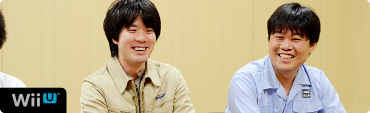 1. “ゲーム機ならではのブラウザー” 2. 「Miiがいるだけで」 3. “共感” 4. “クラウド型ゲーム日記” 岩田 『Miiverse』ならではの要素として、 どんな要素が付け加えられたんですか？ 湯澤 今回、『Miiverse』は 「独立したネットワークサービスではない」 という部分をかなり意識しました。 たとえば「お子さんをはじめとする 幅広い層のお客さんにご利用いただくことを 前提にしている」という点で、 Wii U上のペアレンタルコントロール（※13）を 『Miiverse』でも同じようにシームレス（※14）に 使えるかどうかも大事なんです。 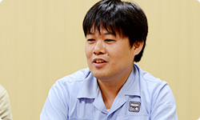 ※13 ペアレンタルコントロール＝未成年の方が使用される場合、その保護者が、対象となるコンテンツ（ゲームや一部のチャンネル）の使用や購入を制限させるための機能。 ※14 シームレス＝複数のサービスの間にある機能が区切られることなく、一貫して操作できる状態のこと。 加藤 また、一般的なＳＮＳ（※15）は、 ソーシャルネットワークにゲームがくっつくという イメージが多いと思うんですけど、 『Miiverse』の場合、 「ゲームに『Miiverse』がくっつく」 というイメージでつくられました。 そういった点がほかとは違う、と思います。 ※15 ＳＮＳ＝ソーシャル・ネットワーキング・サービス。インターネットを通じて、人と人とのつながりを促進、サポートする、コミュニティ型のウェブサイトサービスのこと。 岩田 いろいろなWii Uのゲームに、 『Miiverse』が寄り添うようにくっついていく、 というイメージですか？ 加藤 そうですね。 あと、「手書き投稿」については 途中から追加されたものなんです。 でも、手書きにはテキストにはない、 すごく楽しい雰囲気が出ています。 岩田 「手書き投稿」は どういうふうにはじまったんですか？ 加藤 水木さんからの鶴の一声で、 急に「“手書き”やります」って言われて、 みんな「えっ！」って・・・固まりました（笑）。 岩田 でも、手書きを入れようとすると、 いろんな問題がいっぱい出てきますよね。 栗栖 はい。正直「あー、きたかー・・・！」 とは思いましたけど（笑）。 ただ「うごメモはてな」を何年もやってきたので、 サーバーで手書き投稿をどのように扱うかは イメージできました。 岩田 でも、汗をかいていたことを まったく気づかせないほど、 なんの不思議もなく、すっと書けますよね。 湯澤 はい。「お客さんに喜んで使っていただくためには、 まずは自分たちが当然使ってみたいと思うものを つくらなければいけない」と思って、 まずはそこを意識してつくりました。 岩田 手書き以外に「この瞬間、変わった」 と思うようなことはありましたか？ 栗栖 「手ごたえを感じた」という意味では、 デバッグ作業でテストユーザーさんから投稿されたものを 実際、この目で見たときです。 いっしょに開発していたメンバーも、 様子を見てかなりテンションがあがっていました。 岩田 ああ、たしかにそのころ、水木さんが 「手ごたえが出てきて、みんな、元気になりました！」 って言ってました（笑）。 加藤 はい（笑）。 元気になるタイミングというのは 何回かありまして、まずはじめて 『Miiverse』が動作したときに元気が出て、 次は、自分のMiiをつけて 投稿できるようになったとき、 「おおおっ！」と元気になりました。 岩田 自分のMiiがつけられるようになると、 印象がガラッと変わるんですか？ 加藤 はい。Miiがたくさんいるだけで、 すごくにぎやかな感じがします。 栗栖 自分のMiiを使えるようになってから、 “自分が使うサービス”という 感覚に変わりましたね。 加藤 あと、ウェブとしては 当たり前なのかもしれないですが、 誰かが共感してくれたり、 返信してくれたときに、 通知を出す仕組みをはてなさんが つくってくれました。 「共感してくれてうれしい」っていうのと、 「完成に近づいてきてうれしい」っていうのを 同時に味わえて、「いいポイントができた」と思います。 岩田 はい、先ほども 水木さんがその話をしてくれました。 栗栖 そうなんですね。 通知の仕組みについては、 「これは絶対必要でしょう！」と言いながら、 勝手につくっていましたよね（笑）。 元山 ええ。投稿するだけじゃなく、 誰かからリアクションがあることが いちばんうれしいですから。 岩田 たしかに、自分が誰かに共感すること以上に、 誰かに自分が共感されたことは、 何倍もエネルギーをもらえる気がします。 人間という生き物の本能なんでしょうね。 栗栖 ええ。ほかのＳＮＳでも 人から何か反応があると、 「次も使おう」という モチベーションになりますから。 岩田 ちなみに『Miiverse』というサービスでは、 個々のアプリケーションに 『Miiverse』対応の機能を組み込むことで、 わざわざ画面を切り替えることなく 『Miiverse』への投稿ができるようにもなっています。 これも新しい試みなんですけど、 このサービスの仕組みはどうやって決めたんですか？ 加藤 手探りではありましたけど、 最終的にはゲーム開発者に考えてもらいたいので、 こちらの提供する機能は 基本的には「シンプルにしよう」と考えました。 あと、Wii Uの本体メニューにも 『Miiverse』が組み込まれるので、 ゲーム開発者の声だけでなく、 本体メニュー開発者の声も 『Miiverse』チームにフィードバックしたり、 逆に『Miiverse』チームの声を 開発者にフィードバックしたりして、 調整しながらつくっていきました。 岩田 加藤さんは、いままでの入社以来でいちばん、 同時にたくさんのチームとやりとりをしていますよね。 仕事量が５０倍くらいに増えた感じがしませんでしたか？ 加藤 はい、そうですね（笑）。 いままでずっとゲームの開発をしていたので、 ディレクターひとりとしか話さないで１日がおわる、 なんてことがしょっちゅうだったんです。 今回、爆発的に人とのかかわりが増えて 頭の切り替えが・・・。 次々に人がやってきて、用件を話していくので、 『鬼トレ』（※16）の「鬼計算」（※17）を リアルに体験しています。 一同 （笑） ※16 『鬼トレ』＝『東北大学加齢医学研究所 川島隆太教授監修 ものすごく脳を鍛える５分間の鬼トレーニング』。２０１２年７月２８日に、ニンテンドー3DS用ソフトとして発売された脳活性化ソフト。 ※17 「鬼計算」＝『鬼トレ』内の代表的なトレーニング。出題される計算問題の答えを憶えながら、前の問題の答えを連続して書いていく。「１バック」なら１問前、「２バック」なら２問前の答えを書く。 加藤 次の方がくるときに、 一時的に前の方との会話を 覚えておいて、話をするんです。 だからワーキングメモリー（※18）って 「すごく大事だなぁ」と、 日々実感しています（笑）。 ※18 ワーキングメモリー＝作動記憶。情報を一時的に保ちながら操作・利用する記憶の過程をいう。ある目的を持って記憶した状況を、自分の中の複数の情報と照らし合わせて適切な対応をする脳の働き。 岩田 はい、『鬼トレ』で鍛えてくださいね（笑）。 加藤 わかりました（笑）。 岩田 そのやりとりのなかで、 とくに印象深かったことは何ですか？ 加藤 ゲームから『Miiverse』に投稿するまでの時間ですね。 じつはゲームから『Miiverse』に投稿するには、 専用アプリを起動させて投稿する、 という仕組みになっています。 最初の試作品ができあがったとき、 「すごいものができた！」という気持ちで アプリ開発者のところに持っていったら、 「起動が遅すぎるよ」と言われて・・・（笑）。 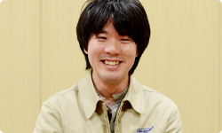 岩田 「褒めてもらおう！」と思って持っていったら、 「遅いよ」と言われたんですね。 加藤 はい。けちょんけちょんに言われました（笑）。 すごく凹んで帰ってきて、 「遅いのを何とかしたい・・・」って思う気持ちで。 その後、関係者みんなで速くする工夫を考えた結果、 いまはずいぶんスムーズに ゲームから投稿できるようになったと思います。 岩田 そこがいちばん大きな「ちゃぶ台返し」でしたか？ 加藤 納期が短くて、人数的にも厳しかったので、 「これは無謀かも・・・」と思っていたんですが、 外池（弘生）さん（※19）と 電遊社さんが頑張って何とかしてくれました。 ※19 外池弘生＝ネットワーク事業部所属。過去、 社長が訊く～任天堂で働くということ～ ネットワーク開発編に登場。
Wii U GamePad 篇 Miiverse プロデュース 篇 Miiverse 開発スタッフ 篇 インターネットブラウザー 篇 Wii U Chat 篇 New スーパーマリオブラザーズ U 篇 ZombiU（ゾンビU） 篇 Nintendo×JOYSOUND Wii カラオケ U 篇 Nintendo Land 篇 Nintendo TVii 篇 Wii Street U powered by Google 篇 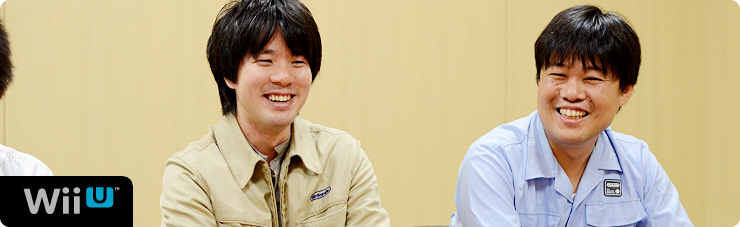 1. “ゲーム機ならではのブラウザー” 2. 「Miiがいるだけで」 3. “共感” 4. “クラウド型ゲーム日記” 岩田 『Miiverse』ならではの要素として、 どんな要素が付け加えられたんですか？ 湯澤 今回、『Miiverse』は 「独立したネットワークサービスではない」 という部分をかなり意識しました。 たとえば「お子さんをはじめとする 幅広い層のお客さんにご利用いただくことを 前提にしている」という点で、 Wii U上のペアレンタルコントロール（※13）を 『Miiverse』でも同じようにシームレス（※14）に 使えるかどうかも大事なんです。 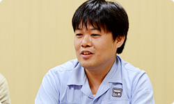 ※13 ペアレンタルコントロール＝未成年の方が使用される場合、その保護者が、対象となるコンテンツ（ゲームや一部のチャンネル）の使用や購入を制限させるための機能。 ※14 シームレス＝複数のサービスの間にある機能が区切られることなく、一貫して操作できる状態のこと。 加藤 また、一般的なＳＮＳ（※15）は、 ソーシャルネットワークにゲームがくっつくという イメージが多いと思うんですけど、 『Miiverse』の場合、 「ゲームに『Miiverse』がくっつく」 というイメージでつくられました。 そういった点がほかとは違う、と思います。 ※15 ＳＮＳ＝ソーシャル・ネットワーキング・サービス。インターネットを通じて、人と人とのつながりを促進、サポートする、コミュニティ型のウェブサイトサービスのこと。 岩田 いろいろなWii Uのゲームに、 『Miiverse』が寄り添うようにくっついていく、 というイメージですか？ 加藤 そうですね。 あと、「手書き投稿」については 途中から追加されたものなんです。 でも、手書きにはテキストにはない、 すごく楽しい雰囲気が出ています。 岩田 「手書き投稿」は どういうふうにはじまったんですか？ 加藤 水木さんからの鶴の一声で、 急に「“手書き”やります」って言われて、 みんな「えっ！」って・・・固まりました（笑）。 岩田 でも、手書きを入れようとすると、 いろんな問題がいっぱい出てきますよね。 栗栖 はい。正直「あー、きたかー・・・！」 とは思いましたけど（笑）。 ただ「うごメモはてな」を何年もやってきたので、 サーバーで手書き投稿をどのように扱うかは イメージできました。 岩田 でも、汗をかいていたことを まったく気づかせないほど、 なんの不思議もなく、すっと書けますよね。 湯澤 はい。「お客さんに喜んで使っていただくためには、 まずは自分たちが当然使ってみたいと思うものを つくらなければいけない」と思って、 まずはそこを意識してつくりました。 岩田 手書き以外に「この瞬間、変わった」 と思うようなことはありましたか？ 栗栖 「手ごたえを感じた」という意味では、 デバッグ作業でテストユーザーさんから投稿されたものを 実際、この目で見たときです。 いっしょに開発していたメンバーも、 様子を見てかなりテンションがあがっていました。 岩田 ああ、たしかにそのころ、水木さんが 「手ごたえが出てきて、みんな、元気になりました！」 って言ってました（笑）。 加藤 はい（笑）。 元気になるタイミングというのは 何回かありまして、まずはじめて 『Miiverse』が動作したときに元気が出て、 次は、自分のMiiをつけて 投稿できるようになったとき、 「おおおっ！」と元気になりました。 岩田 自分のMiiがつけられるようになると、 印象がガラッと変わるんですか？ 加藤 はい。Miiがたくさんいるだけで、 すごくにぎやかな感じがします。 栗栖 自分のMiiを使えるようになってから、 “自分が使うサービス”という 感覚に変わりましたね。 加藤 あと、ウェブとしては 当たり前なのかもしれないですが、 誰かが共感してくれたり、 返信してくれたときに、 通知を出す仕組みをはてなさんが つくってくれました。 「共感してくれてうれしい」っていうのと、 「完成に近づいてきてうれしい」っていうのを 同時に味わえて、「いいポイントができた」と思います。 岩田 はい、先ほども 水木さんがその話をしてくれました。 栗栖 そうなんですね。 通知の仕組みについては、 「これは絶対必要でしょう！」と言いながら、 勝手につくっていましたよね（笑）。 元山 ええ。投稿するだけじゃなく、 誰かからリアクションがあることが いちばんうれしいですから。 岩田 たしかに、自分が誰かに共感すること以上に、 誰かに自分が共感されたことは、 何倍もエネルギーをもらえる気がします。 人間という生き物の本能なんでしょうね。 栗栖 ええ。ほかのＳＮＳでも 人から何か反応があると、 「次も使おう」という モチベーションになりますから。 岩田 ちなみに『Miiverse』というサービスでは、 個々のアプリケーションに 『Miiverse』対応の機能を組み込むことで、 わざわざ画面を切り替えることなく 『Miiverse』への投稿ができるようにもなっています。 これも新しい試みなんですけど、 このサービスの仕組みはどうやって決めたんですか？ 加藤 手探りではありましたけど、 最終的にはゲーム開発者に考えてもらいたいので、 こちらの提供する機能は 基本的には「シンプルにしよう」と考えました。 あと、Wii Uの本体メニューにも 『Miiverse』が組み込まれるので、 ゲーム開発者の声だけでなく、 本体メニュー開発者の声も 『Miiverse』チームにフィードバックしたり、 逆に『Miiverse』チームの声を 開発者にフィードバックしたりして、 調整しながらつくっていきました。 岩田 加藤さんは、いままでの入社以来でいちばん、 同時にたくさんのチームとやりとりをしていますよね。 仕事量が５０倍くらいに増えた感じがしませんでしたか？ 加藤 はい、そうですね（笑）。 いままでずっとゲームの開発をしていたので、 ディレクターひとりとしか話さないで１日がおわる、 なんてことがしょっちゅうだったんです。 今回、爆発的に人とのかかわりが増えて 頭の切り替えが・・・。 次々に人がやってきて、用件を話していくので、 『鬼トレ』（※16）の「鬼計算」（※17）を リアルに体験しています。 一同 （笑） ※16 『鬼トレ』＝『東北大学加齢医学研究所 川島隆太教授監修 ものすごく脳を鍛える５分間の鬼トレーニング』。２０１２年７月２８日に、ニンテンドー3DS用ソフトとして発売された脳活性化ソフト。 ※17 「鬼計算」＝『鬼トレ』内の代表的なトレーニング。出題される計算問題の答えを憶えながら、前の問題の答えを連続して書いていく。「１バック」なら１問前、「２バック」なら２問前の答えを書く。 加藤 次の方がくるときに、 一時的に前の方との会話を 覚えておいて、話をするんです。 だからワーキングメモリー（※18）って 「すごく大事だなぁ」と、 日々実感しています（笑）。 ※18 ワーキングメモリー＝作動記憶。情報を一時的に保ちながら操作・利用する記憶の過程をいう。ある目的を持って記憶した状況を、自分の中の複数の情報と照らし合わせて適切な対応をする脳の働き。 岩田 はい、『鬼トレ』で鍛えてくださいね（笑）。 加藤 わかりました（笑）。 岩田 そのやりとりのなかで、 とくに印象深かったことは何ですか？ 加藤 ゲームから『Miiverse』に投稿するまでの時間ですね。 じつはゲームから『Miiverse』に投稿するには、 専用アプリを起動させて投稿する、 という仕組みになっています。 最初の試作品ができあがったとき、 「すごいものができた！」という気持ちで アプリ開発者のところに持っていったら、 「起動が遅すぎるよ」と言われて・・・（笑）。 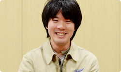 岩田 「褒めてもらおう！」と思って持っていったら、 「遅いよ」と言われたんですね。 加藤 はい。けちょんけちょんに言われました（笑）。 すごく凹んで帰ってきて、 「遅いのを何とかしたい・・・」って思う気持ちで。 その後、関係者みんなで速くする工夫を考えた結果、 いまはずいぶんスムーズに ゲームから投稿できるようになったと思います。 岩田 そこがいちばん大きな「ちゃぶ台返し」でしたか？ 加藤 納期が短くて、人数的にも厳しかったので、 「これは無謀かも・・・」と思っていたんですが、 外池（弘生）さん（※19）と 電遊社さんが頑張って何とかしてくれました。 ※19 外池弘生＝ネットワーク事業部所属。過去、 社長が訊く～任天堂で働くということ～ ネットワーク開発編に登場。
Miiverse プロデュース 篇 Miiverse 開発スタッフ 篇 インターネットブラウザー 篇 Wii U Chat 篇 New スーパーマリオブラザーズ U 篇 ZombiU（ゾンビU） 篇 Nintendo×JOYSOUND Wii カラオケ U 篇 Nintendo Land 篇 Nintendo TVii 篇 Wii Street U powered by Google 篇 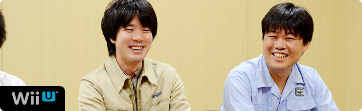 1. “ゲーム機ならではのブラウザー” 2. 「Miiがいるだけで」 3. “共感” 4. “クラウド型ゲーム日記” 岩田 『Miiverse』ならではの要素として、 どんな要素が付け加えられたんですか？ 湯澤 今回、『Miiverse』は 「独立したネットワークサービスではない」 という部分をかなり意識しました。 たとえば「お子さんをはじめとする 幅広い層のお客さんにご利用いただくことを 前提にしている」という点で、 Wii U上のペアレンタルコントロール（※13）を 『Miiverse』でも同じようにシームレス（※14）に 使えるかどうかも大事なんです。 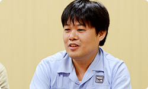 ※13 ペアレンタルコントロール＝未成年の方が使用される場合、その保護者が、対象となるコンテンツ（ゲームや一部のチャンネル）の使用や購入を制限させるための機能。 ※14 シームレス＝複数のサービスの間にある機能が区切られることなく、一貫して操作できる状態のこと。 加藤 また、一般的なＳＮＳ（※15）は、 ソーシャルネットワークにゲームがくっつくという イメージが多いと思うんですけど、 『Miiverse』の場合、 「ゲームに『Miiverse』がくっつく」 というイメージでつくられました。 そういった点がほかとは違う、と思います。 ※15 ＳＮＳ＝ソーシャル・ネットワーキング・サービス。インターネットを通じて、人と人とのつながりを促進、サポートする、コミュニティ型のウェブサイトサービスのこと。 岩田 いろいろなWii Uのゲームに、 『Miiverse』が寄り添うようにくっついていく、 というイメージですか？ 加藤 そうですね。 あと、「手書き投稿」については 途中から追加されたものなんです。 でも、手書きにはテキストにはない、 すごく楽しい雰囲気が出ています。 岩田 「手書き投稿」は どういうふうにはじまったんですか？ 加藤 水木さんからの鶴の一声で、 急に「“手書き”やります」って言われて、 みんな「えっ！」って・・・固まりました（笑）。 岩田 でも、手書きを入れようとすると、 いろんな問題がいっぱい出てきますよね。 栗栖 はい。正直「あー、きたかー・・・！」 とは思いましたけど（笑）。 ただ「うごメモはてな」を何年もやってきたので、 サーバーで手書き投稿をどのように扱うかは イメージできました。 岩田 でも、汗をかいていたことを まったく気づかせないほど、 なんの不思議もなく、すっと書けますよね。 湯澤 はい。「お客さんに喜んで使っていただくためには、 まずは自分たちが当然使ってみたいと思うものを つくらなければいけない」と思って、 まずはそこを意識してつくりました。 岩田 手書き以外に「この瞬間、変わった」 と思うようなことはありましたか？ 栗栖 「手ごたえを感じた」という意味では、 デバッグ作業でテストユーザーさんから投稿されたものを 実際、この目で見たときです。 いっしょに開発していたメンバーも、 様子を見てかなりテンションがあがっていました。 岩田 ああ、たしかにそのころ、水木さんが 「手ごたえが出てきて、みんな、元気になりました！」 って言ってました（笑）。 加藤 はい（笑）。 元気になるタイミングというのは 何回かありまして、まずはじめて 『Miiverse』が動作したときに元気が出て、 次は、自分のMiiをつけて 投稿できるようになったとき、 「おおおっ！」と元気になりました。 岩田 自分のMiiがつけられるようになると、 印象がガラッと変わるんですか？ 加藤 はい。Miiがたくさんいるだけで、 すごくにぎやかな感じがします。 栗栖 自分のMiiを使えるようになってから、 “自分が使うサービス”という 感覚に変わりましたね。 加藤 あと、ウェブとしては 当たり前なのかもしれないですが、 誰かが共感してくれたり、 返信してくれたときに、 通知を出す仕組みをはてなさんが つくってくれました。 「共感してくれてうれしい」っていうのと、 「完成に近づいてきてうれしい」っていうのを 同時に味わえて、「いいポイントができた」と思います。 岩田 はい、先ほども 水木さんがその話をしてくれました。 栗栖 そうなんですね。 通知の仕組みについては、 「これは絶対必要でしょう！」と言いながら、 勝手につくっていましたよね（笑）。 元山 ええ。投稿するだけじゃなく、 誰かからリアクションがあることが いちばんうれしいですから。 岩田 たしかに、自分が誰かに共感すること以上に、 誰かに自分が共感されたことは、 何倍もエネルギーをもらえる気がします。 人間という生き物の本能なんでしょうね。 栗栖 ええ。ほかのＳＮＳでも 人から何か反応があると、 「次も使おう」という モチベーションになりますから。 岩田 ちなみに『Miiverse』というサービスでは、 個々のアプリケーションに 『Miiverse』対応の機能を組み込むことで、 わざわざ画面を切り替えることなく 『Miiverse』への投稿ができるようにもなっています。 これも新しい試みなんですけど、 このサービスの仕組みはどうやって決めたんですか？ 加藤 手探りではありましたけど、 最終的にはゲーム開発者に考えてもらいたいので、 こちらの提供する機能は 基本的には「シンプルにしよう」と考えました。 あと、Wii Uの本体メニューにも 『Miiverse』が組み込まれるので、 ゲーム開発者の声だけでなく、 本体メニュー開発者の声も 『Miiverse』チームにフィードバックしたり、 逆に『Miiverse』チームの声を 開発者にフィードバックしたりして、 調整しながらつくっていきました。 岩田 加藤さんは、いままでの入社以来でいちばん、 同時にたくさんのチームとやりとりをしていますよね。 仕事量が５０倍くらいに増えた感じがしませんでしたか？ 加藤 はい、そうですね（笑）。 いままでずっとゲームの開発をしていたので、 ディレクターひとりとしか話さないで１日がおわる、 なんてことがしょっちゅうだったんです。 今回、爆発的に人とのかかわりが増えて 頭の切り替えが・・・。 次々に人がやってきて、用件を話していくので、 『鬼トレ』（※16）の「鬼計算」（※17）を リアルに体験しています。 一同 （笑） ※16 『鬼トレ』＝『東北大学加齢医学研究所 川島隆太教授監修 ものすごく脳を鍛える５分間の鬼トレーニング』。２０１２年７月２８日に、ニンテンドー3DS用ソフトとして発売された脳活性化ソフト。 ※17 「鬼計算」＝『鬼トレ』内の代表的なトレーニング。出題される計算問題の答えを憶えながら、前の問題の答えを連続して書いていく。「１バック」なら１問前、「２バック」なら２問前の答えを書く。 加藤 次の方がくるときに、 一時的に前の方との会話を 覚えておいて、話をするんです。 だからワーキングメモリー（※18）って 「すごく大事だなぁ」と、 日々実感しています（笑）。 ※18 ワーキングメモリー＝作動記憶。情報を一時的に保ちながら操作・利用する記憶の過程をいう。ある目的を持って記憶した状況を、自分の中の複数の情報と照らし合わせて適切な対応をする脳の働き。 岩田 はい、『鬼トレ』で鍛えてくださいね（笑）。 加藤 わかりました（笑）。 岩田 そのやりとりのなかで、 とくに印象深かったことは何ですか？ 加藤 ゲームから『Miiverse』に投稿するまでの時間ですね。 じつはゲームから『Miiverse』に投稿するには、 専用アプリを起動させて投稿する、 という仕組みになっています。 最初の試作品ができあがったとき、 「すごいものができた！」という気持ちで アプリ開発者のところに持っていったら、 「起動が遅すぎるよ」と言われて・・・（笑）。 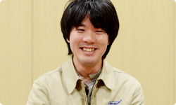 岩田 「褒めてもらおう！」と思って持っていったら、 「遅いよ」と言われたんですね。 加藤 はい。けちょんけちょんに言われました（笑）。 すごく凹んで帰ってきて、 「遅いのを何とかしたい・・・」って思う気持ちで。 その後、関係者みんなで速くする工夫を考えた結果、 いまはずいぶんスムーズに ゲームから投稿できるようになったと思います。 岩田 そこがいちばん大きな「ちゃぶ台返し」でしたか？ 加藤 納期が短くて、人数的にも厳しかったので、 「これは無謀かも・・・」と思っていたんですが、 外池（弘生）さん（※19）と 電遊社さんが頑張って何とかしてくれました。 ※19 外池弘生＝ネットワーク事業部所属。過去、 社長が訊く～任天堂で働くということ～ ネットワーク開発編に登場。
Miiverse 開発スタッフ 篇 インターネットブラウザー 篇 Wii U Chat 篇 New スーパーマリオブラザーズ U 篇 ZombiU（ゾンビU） 篇 Nintendo×JOYSOUND Wii カラオケ U 篇 Nintendo Land 篇 Nintendo TVii 篇 Wii Street U powered by Google 篇 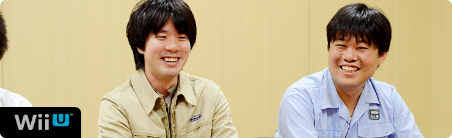 1. “ゲーム機ならではのブラウザー” 2. 「Miiがいるだけで」 3. “共感” 4. “クラウド型ゲーム日記” 岩田 『Miiverse』ならではの要素として、 どんな要素が付け加えられたんですか？ 湯澤 今回、『Miiverse』は 「独立したネットワークサービスではない」 という部分をかなり意識しました。 たとえば「お子さんをはじめとする 幅広い層のお客さんにご利用いただくことを 前提にしている」という点で、 Wii U上のペアレンタルコントロール（※13）を 『Miiverse』でも同じようにシームレス（※14）に 使えるかどうかも大事なんです。 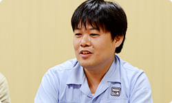 ※13 ペアレンタルコントロール＝未成年の方が使用される場合、その保護者が、対象となるコンテンツ（ゲームや一部のチャンネル）の使用や購入を制限させるための機能。 ※14 シームレス＝複数のサービスの間にある機能が区切られることなく、一貫して操作できる状態のこと。 加藤 また、一般的なＳＮＳ（※15）は、 ソーシャルネットワークにゲームがくっつくという イメージが多いと思うんですけど、 『Miiverse』の場合、 「ゲームに『Miiverse』がくっつく」 というイメージでつくられました。 そういった点がほかとは違う、と思います。 ※15 ＳＮＳ＝ソーシャル・ネットワーキング・サービス。インターネットを通じて、人と人とのつながりを促進、サポートする、コミュニティ型のウェブサイトサービスのこと。 岩田 いろいろなWii Uのゲームに、 『Miiverse』が寄り添うようにくっついていく、 というイメージですか？ 加藤 そうですね。 あと、「手書き投稿」については 途中から追加されたものなんです。 でも、手書きにはテキストにはない、 すごく楽しい雰囲気が出ています。 岩田 「手書き投稿」は どういうふうにはじまったんですか？ 加藤 水木さんからの鶴の一声で、 急に「“手書き”やります」って言われて、 みんな「えっ！」って・・・固まりました（笑）。 岩田 でも、手書きを入れようとすると、 いろんな問題がいっぱい出てきますよね。 栗栖 はい。正直「あー、きたかー・・・！」 とは思いましたけど（笑）。 ただ「うごメモはてな」を何年もやってきたので、 サーバーで手書き投稿をどのように扱うかは イメージできました。 岩田 でも、汗をかいていたことを まったく気づかせないほど、 なんの不思議もなく、すっと書けますよね。 湯澤 はい。「お客さんに喜んで使っていただくためには、 まずは自分たちが当然使ってみたいと思うものを つくらなければいけない」と思って、 まずはそこを意識してつくりました。 岩田 手書き以外に「この瞬間、変わった」 と思うようなことはありましたか？ 栗栖 「手ごたえを感じた」という意味では、 デバッグ作業でテストユーザーさんから投稿されたものを 実際、この目で見たときです。 いっしょに開発していたメンバーも、 様子を見てかなりテンションがあがっていました。 岩田 ああ、たしかにそのころ、水木さんが 「手ごたえが出てきて、みんな、元気になりました！」 って言ってました（笑）。 加藤 はい（笑）。 元気になるタイミングというのは 何回かありまして、まずはじめて 『Miiverse』が動作したときに元気が出て、 次は、自分のMiiをつけて 投稿できるようになったとき、 「おおおっ！」と元気になりました。 岩田 自分のMiiがつけられるようになると、 印象がガラッと変わるんですか？ 加藤 はい。Miiがたくさんいるだけで、 すごくにぎやかな感じがします。 栗栖 自分のMiiを使えるようになってから、 “自分が使うサービス”という 感覚に変わりましたね。 加藤 あと、ウェブとしては 当たり前なのかもしれないですが、 誰かが共感してくれたり、 返信してくれたときに、 通知を出す仕組みをはてなさんが つくってくれました。 「共感してくれてうれしい」っていうのと、 「完成に近づいてきてうれしい」っていうのを 同時に味わえて、「いいポイントができた」と思います。 岩田 はい、先ほども 水木さんがその話をしてくれました。 栗栖 そうなんですね。 通知の仕組みについては、 「これは絶対必要でしょう！」と言いながら、 勝手につくっていましたよね（笑）。 元山 ええ。投稿するだけじゃなく、 誰かからリアクションがあることが いちばんうれしいですから。 岩田 たしかに、自分が誰かに共感すること以上に、 誰かに自分が共感されたことは、 何倍もエネルギーをもらえる気がします。 人間という生き物の本能なんでしょうね。 栗栖 ええ。ほかのＳＮＳでも 人から何か反応があると、 「次も使おう」という モチベーションになりますから。 岩田 ちなみに『Miiverse』というサービスでは、 個々のアプリケーションに 『Miiverse』対応の機能を組み込むことで、 わざわざ画面を切り替えることなく 『Miiverse』への投稿ができるようにもなっています。 これも新しい試みなんですけど、 このサービスの仕組みはどうやって決めたんですか？ 加藤 手探りではありましたけど、 最終的にはゲーム開発者に考えてもらいたいので、 こちらの提供する機能は 基本的には「シンプルにしよう」と考えました。 あと、Wii Uの本体メニューにも 『Miiverse』が組み込まれるので、 ゲーム開発者の声だけでなく、 本体メニュー開発者の声も 『Miiverse』チームにフィードバックしたり、 逆に『Miiverse』チームの声を 開発者にフィードバックしたりして、 調整しながらつくっていきました。 岩田 加藤さんは、いままでの入社以来でいちばん、 同時にたくさんのチームとやりとりをしていますよね。 仕事量が５０倍くらいに増えた感じがしませんでしたか？ 加藤 はい、そうですね（笑）。 いままでずっとゲームの開発をしていたので、 ディレクターひとりとしか話さないで１日がおわる、 なんてことがしょっちゅうだったんです。 今回、爆発的に人とのかかわりが増えて 頭の切り替えが・・・。 次々に人がやってきて、用件を話していくので、 『鬼トレ』（※16）の「鬼計算」（※17）を リアルに体験しています。 一同 （笑） ※16 『鬼トレ』＝『東北大学加齢医学研究所 川島隆太教授監修 ものすごく脳を鍛える５分間の鬼トレーニング』。２０１２年７月２８日に、ニンテンドー3DS用ソフトとして発売された脳活性化ソフト。 ※17 「鬼計算」＝『鬼トレ』内の代表的なトレーニング。出題される計算問題の答えを憶えながら、前の問題の答えを連続して書いていく。「１バック」なら１問前、「２バック」なら２問前の答えを書く。 加藤 次の方がくるときに、 一時的に前の方との会話を 覚えておいて、話をするんです。 だからワーキングメモリー（※18）って 「すごく大事だなぁ」と、 日々実感しています（笑）。 ※18 ワーキングメモリー＝作動記憶。情報を一時的に保ちながら操作・利用する記憶の過程をいう。ある目的を持って記憶した状況を、自分の中の複数の情報と照らし合わせて適切な対応をする脳の働き。 岩田 はい、『鬼トレ』で鍛えてくださいね（笑）。 加藤 わかりました（笑）。 岩田 そのやりとりのなかで、 とくに印象深かったことは何ですか？ 加藤 ゲームから『Miiverse』に投稿するまでの時間ですね。 じつはゲームから『Miiverse』に投稿するには、 専用アプリを起動させて投稿する、 という仕組みになっています。 最初の試作品ができあがったとき、 「すごいものができた！」という気持ちで アプリ開発者のところに持っていったら、 「起動が遅すぎるよ」と言われて・・・（笑）。 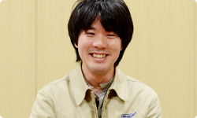 岩田 「褒めてもらおう！」と思って持っていったら、 「遅いよ」と言われたんですね。 加藤 はい。けちょんけちょんに言われました（笑）。 すごく凹んで帰ってきて、 「遅いのを何とかしたい・・・」って思う気持ちで。 その後、関係者みんなで速くする工夫を考えた結果、 いまはずいぶんスムーズに ゲームから投稿できるようになったと思います。 岩田 そこがいちばん大きな「ちゃぶ台返し」でしたか？ 加藤 納期が短くて、人数的にも厳しかったので、 「これは無謀かも・・・」と思っていたんですが、 外池（弘生）さん（※19）と 電遊社さんが頑張って何とかしてくれました。 ※19 外池弘生＝ネットワーク事業部所属。過去、 社長が訊く～任天堂で働くということ～ ネットワーク開発編に登場。
インターネットブラウザー 篇 Wii U Chat 篇 New スーパーマリオブラザーズ U 篇 ZombiU（ゾンビU） 篇 Nintendo×JOYSOUND Wii カラオケ U 篇 Nintendo Land 篇 Nintendo TVii 篇 Wii Street U powered by Google 篇 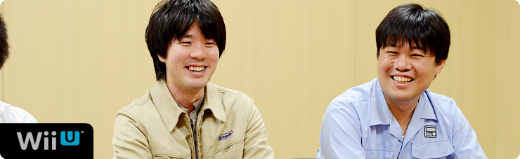 1. “ゲーム機ならではのブラウザー” 2. 「Miiがいるだけで」 3. “共感” 4. “クラウド型ゲーム日記” 岩田 『Miiverse』ならではの要素として、 どんな要素が付け加えられたんですか？ 湯澤 今回、『Miiverse』は 「独立したネットワークサービスではない」 という部分をかなり意識しました。 たとえば「お子さんをはじめとする 幅広い層のお客さんにご利用いただくことを 前提にしている」という点で、 Wii U上のペアレンタルコントロール（※13）を 『Miiverse』でも同じようにシームレス（※14）に 使えるかどうかも大事なんです。 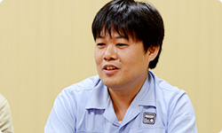 ※13 ペアレンタルコントロール＝未成年の方が使用される場合、その保護者が、対象となるコンテンツ（ゲームや一部のチャンネル）の使用や購入を制限させるための機能。 ※14 シームレス＝複数のサービスの間にある機能が区切られることなく、一貫して操作できる状態のこと。 加藤 また、一般的なＳＮＳ（※15）は、 ソーシャルネットワークにゲームがくっつくという イメージが多いと思うんですけど、 『Miiverse』の場合、 「ゲームに『Miiverse』がくっつく」 というイメージでつくられました。 そういった点がほかとは違う、と思います。 ※15 ＳＮＳ＝ソーシャル・ネットワーキング・サービス。インターネットを通じて、人と人とのつながりを促進、サポートする、コミュニティ型のウェブサイトサービスのこと。 岩田 いろいろなWii Uのゲームに、 『Miiverse』が寄り添うようにくっついていく、 というイメージですか？ 加藤 そうですね。 あと、「手書き投稿」については 途中から追加されたものなんです。 でも、手書きにはテキストにはない、 すごく楽しい雰囲気が出ています。 岩田 「手書き投稿」は どういうふうにはじまったんですか？ 加藤 水木さんからの鶴の一声で、 急に「“手書き”やります」って言われて、 みんな「えっ！」って・・・固まりました（笑）。 岩田 でも、手書きを入れようとすると、 いろんな問題がいっぱい出てきますよね。 栗栖 はい。正直「あー、きたかー・・・！」 とは思いましたけど（笑）。 ただ「うごメモはてな」を何年もやってきたので、 サーバーで手書き投稿をどのように扱うかは イメージできました。 岩田 でも、汗をかいていたことを まったく気づかせないほど、 なんの不思議もなく、すっと書けますよね。 湯澤 はい。「お客さんに喜んで使っていただくためには、 まずは自分たちが当然使ってみたいと思うものを つくらなければいけない」と思って、 まずはそこを意識してつくりました。 岩田 手書き以外に「この瞬間、変わった」 と思うようなことはありましたか？ 栗栖 「手ごたえを感じた」という意味では、 デバッグ作業でテストユーザーさんから投稿されたものを 実際、この目で見たときです。 いっしょに開発していたメンバーも、 様子を見てかなりテンションがあがっていました。 岩田 ああ、たしかにそのころ、水木さんが 「手ごたえが出てきて、みんな、元気になりました！」 って言ってました（笑）。 加藤 はい（笑）。 元気になるタイミングというのは 何回かありまして、まずはじめて 『Miiverse』が動作したときに元気が出て、 次は、自分のMiiをつけて 投稿できるようになったとき、 「おおおっ！」と元気になりました。 岩田 自分のMiiがつけられるようになると、 印象がガラッと変わるんですか？ 加藤 はい。Miiがたくさんいるだけで、 すごくにぎやかな感じがします。 栗栖 自分のMiiを使えるようになってから、 “自分が使うサービス”という 感覚に変わりましたね。 加藤 あと、ウェブとしては 当たり前なのかもしれないですが、 誰かが共感してくれたり、 返信してくれたときに、 通知を出す仕組みをはてなさんが つくってくれました。 「共感してくれてうれしい」っていうのと、 「完成に近づいてきてうれしい」っていうのを 同時に味わえて、「いいポイントができた」と思います。 岩田 はい、先ほども 水木さんがその話をしてくれました。 栗栖 そうなんですね。 通知の仕組みについては、 「これは絶対必要でしょう！」と言いながら、 勝手につくっていましたよね（笑）。 元山 ええ。投稿するだけじゃなく、 誰かからリアクションがあることが いちばんうれしいですから。 岩田 たしかに、自分が誰かに共感すること以上に、 誰かに自分が共感されたことは、 何倍もエネルギーをもらえる気がします。 人間という生き物の本能なんでしょうね。 栗栖 ええ。ほかのＳＮＳでも 人から何か反応があると、 「次も使おう」という モチベーションになりますから。 岩田 ちなみに『Miiverse』というサービスでは、 個々のアプリケーションに 『Miiverse』対応の機能を組み込むことで、 わざわざ画面を切り替えることなく 『Miiverse』への投稿ができるようにもなっています。 これも新しい試みなんですけど、 このサービスの仕組みはどうやって決めたんですか？ 加藤 手探りではありましたけど、 最終的にはゲーム開発者に考えてもらいたいので、 こちらの提供する機能は 基本的には「シンプルにしよう」と考えました。 あと、Wii Uの本体メニューにも 『Miiverse』が組み込まれるので、 ゲーム開発者の声だけでなく、 本体メニュー開発者の声も 『Miiverse』チームにフィードバックしたり、 逆に『Miiverse』チームの声を 開発者にフィードバックしたりして、 調整しながらつくっていきました。 岩田 加藤さんは、いままでの入社以来でいちばん、 同時にたくさんのチームとやりとりをしていますよね。 仕事量が５０倍くらいに増えた感じがしませんでしたか？ 加藤 はい、そうですね（笑）。 いままでずっとゲームの開発をしていたので、 ディレクターひとりとしか話さないで１日がおわる、 なんてことがしょっちゅうだったんです。 今回、爆発的に人とのかかわりが増えて 頭の切り替えが・・・。 次々に人がやってきて、用件を話していくので、 『鬼トレ』（※16）の「鬼計算」（※17）を リアルに体験しています。 一同 （笑） ※16 『鬼トレ』＝『東北大学加齢医学研究所 川島隆太教授監修 ものすごく脳を鍛える５分間の鬼トレーニング』。２０１２年７月２８日に、ニンテンドー3DS用ソフトとして発売された脳活性化ソフト。 ※17 「鬼計算」＝『鬼トレ』内の代表的なトレーニング。出題される計算問題の答えを憶えながら、前の問題の答えを連続して書いていく。「１バック」なら１問前、「２バック」なら２問前の答えを書く。 加藤 次の方がくるときに、 一時的に前の方との会話を 覚えておいて、話をするんです。 だからワーキングメモリー（※18）って 「すごく大事だなぁ」と、 日々実感しています（笑）。 ※18 ワーキングメモリー＝作動記憶。情報を一時的に保ちながら操作・利用する記憶の過程をいう。ある目的を持って記憶した状況を、自分の中の複数の情報と照らし合わせて適切な対応をする脳の働き。 岩田 はい、『鬼トレ』で鍛えてくださいね（笑）。 加藤 わかりました（笑）。 岩田 そのやりとりのなかで、 とくに印象深かったことは何ですか？ 加藤 ゲームから『Miiverse』に投稿するまでの時間ですね。 じつはゲームから『Miiverse』に投稿するには、 専用アプリを起動させて投稿する、 という仕組みになっています。 最初の試作品ができあがったとき、 「すごいものができた！」という気持ちで アプリ開発者のところに持っていったら、 「起動が遅すぎるよ」と言われて・・・（笑）。 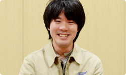 岩田 「褒めてもらおう！」と思って持っていったら、 「遅いよ」と言われたんですね。 加藤 はい。けちょんけちょんに言われました（笑）。 すごく凹んで帰ってきて、 「遅いのを何とかしたい・・・」って思う気持ちで。 その後、関係者みんなで速くする工夫を考えた結果、 いまはずいぶんスムーズに ゲームから投稿できるようになったと思います。 岩田 そこがいちばん大きな「ちゃぶ台返し」でしたか？ 加藤 納期が短くて、人数的にも厳しかったので、 「これは無謀かも・・・」と思っていたんですが、 外池（弘生）さん（※19）と 電遊社さんが頑張って何とかしてくれました。 ※19 外池弘生＝ネットワーク事業部所属。過去、 社長が訊く～任天堂で働くということ～ ネットワーク開発編に登場。
Wii U Chat 篇 New スーパーマリオブラザーズ U 篇 ZombiU（ゾンビU） 篇 Nintendo×JOYSOUND Wii カラオケ U 篇 Nintendo Land 篇 Nintendo TVii 篇 Wii Street U powered by Google 篇 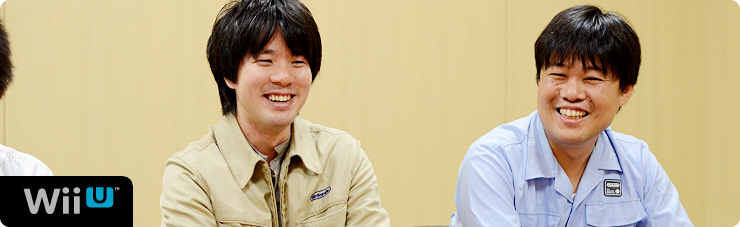 1. “ゲーム機ならではのブラウザー” 2. 「Miiがいるだけで」 3. “共感” 4. “クラウド型ゲーム日記” 岩田 『Miiverse』ならではの要素として、 どんな要素が付け加えられたんですか？ 湯澤 今回、『Miiverse』は 「独立したネットワークサービスではない」 という部分をかなり意識しました。 たとえば「お子さんをはじめとする 幅広い層のお客さんにご利用いただくことを 前提にしている」という点で、 Wii U上のペアレンタルコントロール（※13）を 『Miiverse』でも同じようにシームレス（※14）に 使えるかどうかも大事なんです。 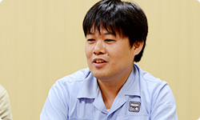 ※13 ペアレンタルコントロール＝未成年の方が使用される場合、その保護者が、対象となるコンテンツ（ゲームや一部のチャンネル）の使用や購入を制限させるための機能。 ※14 シームレス＝複数のサービスの間にある機能が区切られることなく、一貫して操作できる状態のこと。 加藤 また、一般的なＳＮＳ（※15）は、 ソーシャルネットワークにゲームがくっつくという イメージが多いと思うんですけど、 『Miiverse』の場合、 「ゲームに『Miiverse』がくっつく」 というイメージでつくられました。 そういった点がほかとは違う、と思います。 ※15 ＳＮＳ＝ソーシャル・ネットワーキング・サービス。インターネットを通じて、人と人とのつながりを促進、サポートする、コミュニティ型のウェブサイトサービスのこと。 岩田 いろいろなWii Uのゲームに、 『Miiverse』が寄り添うようにくっついていく、 というイメージですか？ 加藤 そうですね。 あと、「手書き投稿」については 途中から追加されたものなんです。 でも、手書きにはテキストにはない、 すごく楽しい雰囲気が出ています。 岩田 「手書き投稿」は どういうふうにはじまったんですか？ 加藤 水木さんからの鶴の一声で、 急に「“手書き”やります」って言われて、 みんな「えっ！」って・・・固まりました（笑）。 岩田 でも、手書きを入れようとすると、 いろんな問題がいっぱい出てきますよね。 栗栖 はい。正直「あー、きたかー・・・！」 とは思いましたけど（笑）。 ただ「うごメモはてな」を何年もやってきたので、 サーバーで手書き投稿をどのように扱うかは イメージできました。 岩田 でも、汗をかいていたことを まったく気づかせないほど、 なんの不思議もなく、すっと書けますよね。 湯澤 はい。「お客さんに喜んで使っていただくためには、 まずは自分たちが当然使ってみたいと思うものを つくらなければいけない」と思って、 まずはそこを意識してつくりました。 岩田 手書き以外に「この瞬間、変わった」 と思うようなことはありましたか？ 栗栖 「手ごたえを感じた」という意味では、 デバッグ作業でテストユーザーさんから投稿されたものを 実際、この目で見たときです。 いっしょに開発していたメンバーも、 様子を見てかなりテンションがあがっていました。 岩田 ああ、たしかにそのころ、水木さんが 「手ごたえが出てきて、みんな、元気になりました！」 って言ってました（笑）。 加藤 はい（笑）。 元気になるタイミングというのは 何回かありまして、まずはじめて 『Miiverse』が動作したときに元気が出て、 次は、自分のMiiをつけて 投稿できるようになったとき、 「おおおっ！」と元気になりました。 岩田 自分のMiiがつけられるようになると、 印象がガラッと変わるんですか？ 加藤 はい。Miiがたくさんいるだけで、 すごくにぎやかな感じがします。 栗栖 自分のMiiを使えるようになってから、 “自分が使うサービス”という 感覚に変わりましたね。 加藤 あと、ウェブとしては 当たり前なのかもしれないですが、 誰かが共感してくれたり、 返信してくれたときに、 通知を出す仕組みをはてなさんが つくってくれました。 「共感してくれてうれしい」っていうのと、 「完成に近づいてきてうれしい」っていうのを 同時に味わえて、「いいポイントができた」と思います。 岩田 はい、先ほども 水木さんがその話をしてくれました。 栗栖 そうなんですね。 通知の仕組みについては、 「これは絶対必要でしょう！」と言いながら、 勝手につくっていましたよね（笑）。 元山 ええ。投稿するだけじゃなく、 誰かからリアクションがあることが いちばんうれしいですから。 岩田 たしかに、自分が誰かに共感すること以上に、 誰かに自分が共感されたことは、 何倍もエネルギーをもらえる気がします。 人間という生き物の本能なんでしょうね。 栗栖 ええ。ほかのＳＮＳでも 人から何か反応があると、 「次も使おう」という モチベーションになりますから。 岩田 ちなみに『Miiverse』というサービスでは、 個々のアプリケーションに 『Miiverse』対応の機能を組み込むことで、 わざわざ画面を切り替えることなく 『Miiverse』への投稿ができるようにもなっています。 これも新しい試みなんですけど、 このサービスの仕組みはどうやって決めたんですか？ 加藤 手探りではありましたけど、 最終的にはゲーム開発者に考えてもらいたいので、 こちらの提供する機能は 基本的には「シンプルにしよう」と考えました。 あと、Wii Uの本体メニューにも 『Miiverse』が組み込まれるので、 ゲーム開発者の声だけでなく、 本体メニュー開発者の声も 『Miiverse』チームにフィードバックしたり、 逆に『Miiverse』チームの声を 開発者にフィードバックしたりして、 調整しながらつくっていきました。 岩田 加藤さんは、いままでの入社以来でいちばん、 同時にたくさんのチームとやりとりをしていますよね。 仕事量が５０倍くらいに増えた感じがしませんでしたか？ 加藤 はい、そうですね（笑）。 いままでずっとゲームの開発をしていたので、 ディレクターひとりとしか話さないで１日がおわる、 なんてことがしょっちゅうだったんです。 今回、爆発的に人とのかかわりが増えて 頭の切り替えが・・・。 次々に人がやってきて、用件を話していくので、 『鬼トレ』（※16）の「鬼計算」（※17）を リアルに体験しています。 一同 （笑） ※16 『鬼トレ』＝『東北大学加齢医学研究所 川島隆太教授監修 ものすごく脳を鍛える５分間の鬼トレーニング』。２０１２年７月２８日に、ニンテンドー3DS用ソフトとして発売された脳活性化ソフト。 ※17 「鬼計算」＝『鬼トレ』内の代表的なトレーニング。出題される計算問題の答えを憶えながら、前の問題の答えを連続して書いていく。「１バック」なら１問前、「２バック」なら２問前の答えを書く。 加藤 次の方がくるときに、 一時的に前の方との会話を 覚えておいて、話をするんです。 だからワーキングメモリー（※18）って 「すごく大事だなぁ」と、 日々実感しています（笑）。 ※18 ワーキングメモリー＝作動記憶。情報を一時的に保ちながら操作・利用する記憶の過程をいう。ある目的を持って記憶した状況を、自分の中の複数の情報と照らし合わせて適切な対応をする脳の働き。 岩田 はい、『鬼トレ』で鍛えてくださいね（笑）。 加藤 わかりました（笑）。 岩田 そのやりとりのなかで、 とくに印象深かったことは何ですか？ 加藤 ゲームから『Miiverse』に投稿するまでの時間ですね。 じつはゲームから『Miiverse』に投稿するには、 専用アプリを起動させて投稿する、 という仕組みになっています。 最初の試作品ができあがったとき、 「すごいものができた！」という気持ちで アプリ開発者のところに持っていったら、 「起動が遅すぎるよ」と言われて・・・（笑）。 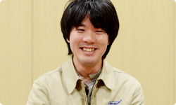 岩田 「褒めてもらおう！」と思って持っていったら、 「遅いよ」と言われたんですね。 加藤 はい。けちょんけちょんに言われました（笑）。 すごく凹んで帰ってきて、 「遅いのを何とかしたい・・・」って思う気持ちで。 その後、関係者みんなで速くする工夫を考えた結果、 いまはずいぶんスムーズに ゲームから投稿できるようになったと思います。 岩田 そこがいちばん大きな「ちゃぶ台返し」でしたか？ 加藤 納期が短くて、人数的にも厳しかったので、 「これは無謀かも・・・」と思っていたんですが、 外池（弘生）さん（※19）と 電遊社さんが頑張って何とかしてくれました。 ※19 外池弘生＝ネットワーク事業部所属。過去、 社長が訊く～任天堂で働くということ～ ネットワーク開発編に登場。
New スーパーマリオブラザーズ U 篇 ZombiU（ゾンビU） 篇 Nintendo×JOYSOUND Wii カラオケ U 篇 Nintendo Land 篇 Nintendo TVii 篇 Wii Street U powered by Google 篇 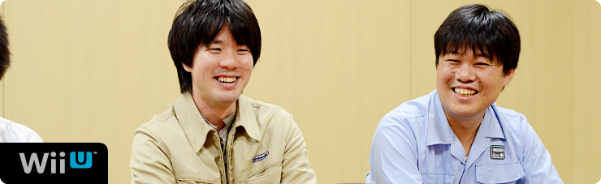 1. “ゲーム機ならではのブラウザー” 2. 「Miiがいるだけで」 3. “共感” 4. “クラウド型ゲーム日記” 岩田 『Miiverse』ならではの要素として、 どんな要素が付け加えられたんですか？ 湯澤 今回、『Miiverse』は 「独立したネットワークサービスではない」 という部分をかなり意識しました。 たとえば「お子さんをはじめとする 幅広い層のお客さんにご利用いただくことを 前提にしている」という点で、 Wii U上のペアレンタルコントロール（※13）を 『Miiverse』でも同じようにシームレス（※14）に 使えるかどうかも大事なんです。 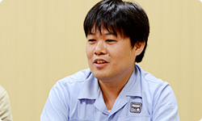 ※13 ペアレンタルコントロール＝未成年の方が使用される場合、その保護者が、対象となるコンテンツ（ゲームや一部のチャンネル）の使用や購入を制限させるための機能。 ※14 シームレス＝複数のサービスの間にある機能が区切られることなく、一貫して操作できる状態のこと。 加藤 また、一般的なＳＮＳ（※15）は、 ソーシャルネットワークにゲームがくっつくという イメージが多いと思うんですけど、 『Miiverse』の場合、 「ゲームに『Miiverse』がくっつく」 というイメージでつくられました。 そういった点がほかとは違う、と思います。 ※15 ＳＮＳ＝ソーシャル・ネットワーキング・サービス。インターネットを通じて、人と人とのつながりを促進、サポートする、コミュニティ型のウェブサイトサービスのこと。 岩田 いろいろなWii Uのゲームに、 『Miiverse』が寄り添うようにくっついていく、 というイメージですか？ 加藤 そうですね。 あと、「手書き投稿」については 途中から追加されたものなんです。 でも、手書きにはテキストにはない、 すごく楽しい雰囲気が出ています。 岩田 「手書き投稿」は どういうふうにはじまったんですか？ 加藤 水木さんからの鶴の一声で、 急に「“手書き”やります」って言われて、 みんな「えっ！」って・・・固まりました（笑）。 岩田 でも、手書きを入れようとすると、 いろんな問題がいっぱい出てきますよね。 栗栖 はい。正直「あー、きたかー・・・！」 とは思いましたけど（笑）。 ただ「うごメモはてな」を何年もやってきたので、 サーバーで手書き投稿をどのように扱うかは イメージできました。 岩田 でも、汗をかいていたことを まったく気づかせないほど、 なんの不思議もなく、すっと書けますよね。 湯澤 はい。「お客さんに喜んで使っていただくためには、 まずは自分たちが当然使ってみたいと思うものを つくらなければいけない」と思って、 まずはそこを意識してつくりました。 岩田 手書き以外に「この瞬間、変わった」 と思うようなことはありましたか？ 栗栖 「手ごたえを感じた」という意味では、 デバッグ作業でテストユーザーさんから投稿されたものを 実際、この目で見たときです。 いっしょに開発していたメンバーも、 様子を見てかなりテンションがあがっていました。 岩田 ああ、たしかにそのころ、水木さんが 「手ごたえが出てきて、みんな、元気になりました！」 って言ってました（笑）。 加藤 はい（笑）。 元気になるタイミングというのは 何回かありまして、まずはじめて 『Miiverse』が動作したときに元気が出て、 次は、自分のMiiをつけて 投稿できるようになったとき、 「おおおっ！」と元気になりました。 岩田 自分のMiiがつけられるようになると、 印象がガラッと変わるんですか？ 加藤 はい。Miiがたくさんいるだけで、 すごくにぎやかな感じがします。 栗栖 自分のMiiを使えるようになってから、 “自分が使うサービス”という 感覚に変わりましたね。 加藤 あと、ウェブとしては 当たり前なのかもしれないですが、 誰かが共感してくれたり、 返信してくれたときに、 通知を出す仕組みをはてなさんが つくってくれました。 「共感してくれてうれしい」っていうのと、 「完成に近づいてきてうれしい」っていうのを 同時に味わえて、「いいポイントができた」と思います。 岩田 はい、先ほども 水木さんがその話をしてくれました。 栗栖 そうなんですね。 通知の仕組みについては、 「これは絶対必要でしょう！」と言いながら、 勝手につくっていましたよね（笑）。 元山 ええ。投稿するだけじゃなく、 誰かからリアクションがあることが いちばんうれしいですから。 岩田 たしかに、自分が誰かに共感すること以上に、 誰かに自分が共感されたことは、 何倍もエネルギーをもらえる気がします。 人間という生き物の本能なんでしょうね。 栗栖 ええ。ほかのＳＮＳでも 人から何か反応があると、 「次も使おう」という モチベーションになりますから。 岩田 ちなみに『Miiverse』というサービスでは、 個々のアプリケーションに 『Miiverse』対応の機能を組み込むことで、 わざわざ画面を切り替えることなく 『Miiverse』への投稿ができるようにもなっています。 これも新しい試みなんですけど、 このサービスの仕組みはどうやって決めたんですか？ 加藤 手探りではありましたけど、 最終的にはゲーム開発者に考えてもらいたいので、 こちらの提供する機能は 基本的には「シンプルにしよう」と考えました。 あと、Wii Uの本体メニューにも 『Miiverse』が組み込まれるので、 ゲーム開発者の声だけでなく、 本体メニュー開発者の声も 『Miiverse』チームにフィードバックしたり、 逆に『Miiverse』チームの声を 開発者にフィードバックしたりして、 調整しながらつくっていきました。 岩田 加藤さんは、いままでの入社以来でいちばん、 同時にたくさんのチームとやりとりをしていますよね。 仕事量が５０倍くらいに増えた感じがしませんでしたか？ 加藤 はい、そうですね（笑）。 いままでずっとゲームの開発をしていたので、 ディレクターひとりとしか話さないで１日がおわる、 なんてことがしょっちゅうだったんです。 今回、爆発的に人とのかかわりが増えて 頭の切り替えが・・・。 次々に人がやってきて、用件を話していくので、 『鬼トレ』（※16）の「鬼計算」（※17）を リアルに体験しています。 一同 （笑） ※16 『鬼トレ』＝『東北大学加齢医学研究所 川島隆太教授監修 ものすごく脳を鍛える５分間の鬼トレーニング』。２０１２年７月２８日に、ニンテンドー3DS用ソフトとして発売された脳活性化ソフト。 ※17 「鬼計算」＝『鬼トレ』内の代表的なトレーニング。出題される計算問題の答えを憶えながら、前の問題の答えを連続して書いていく。「１バック」なら１問前、「２バック」なら２問前の答えを書く。 加藤 次の方がくるときに、 一時的に前の方との会話を 覚えておいて、話をするんです。 だからワーキングメモリー（※18）って 「すごく大事だなぁ」と、 日々実感しています（笑）。 ※18 ワーキングメモリー＝作動記憶。情報を一時的に保ちながら操作・利用する記憶の過程をいう。ある目的を持って記憶した状況を、自分の中の複数の情報と照らし合わせて適切な対応をする脳の働き。 岩田 はい、『鬼トレ』で鍛えてくださいね（笑）。 加藤 わかりました（笑）。 岩田 そのやりとりのなかで、 とくに印象深かったことは何ですか？ 加藤 ゲームから『Miiverse』に投稿するまでの時間ですね。 じつはゲームから『Miiverse』に投稿するには、 専用アプリを起動させて投稿する、 という仕組みになっています。 最初の試作品ができあがったとき、 「すごいものができた！」という気持ちで アプリ開発者のところに持っていったら、 「起動が遅すぎるよ」と言われて・・・（笑）。 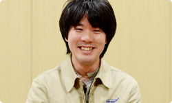 岩田 「褒めてもらおう！」と思って持っていったら、 「遅いよ」と言われたんですね。 加藤 はい。けちょんけちょんに言われました（笑）。 すごく凹んで帰ってきて、 「遅いのを何とかしたい・・・」って思う気持ちで。 その後、関係者みんなで速くする工夫を考えた結果、 いまはずいぶんスムーズに ゲームから投稿できるようになったと思います。 岩田 そこがいちばん大きな「ちゃぶ台返し」でしたか？ 加藤 納期が短くて、人数的にも厳しかったので、 「これは無謀かも・・・」と思っていたんですが、 外池（弘生）さん（※19）と 電遊社さんが頑張って何とかしてくれました。 ※19 外池弘生＝ネットワーク事業部所属。過去、 社長が訊く～任天堂で働くということ～ ネットワーク開発編に登場。
ZombiU（ゾンビU） 篇 Nintendo×JOYSOUND Wii カラオケ U 篇 Nintendo Land 篇 Nintendo TVii 篇 Wii Street U powered by Google 篇 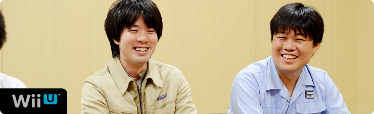 1. “ゲーム機ならではのブラウザー” 2. 「Miiがいるだけで」 3. “共感” 4. “クラウド型ゲーム日記” 岩田 『Miiverse』ならではの要素として、 どんな要素が付け加えられたんですか？ 湯澤 今回、『Miiverse』は 「独立したネットワークサービスではない」 という部分をかなり意識しました。 たとえば「お子さんをはじめとする 幅広い層のお客さんにご利用いただくことを 前提にしている」という点で、 Wii U上のペアレンタルコントロール（※13）を 『Miiverse』でも同じようにシームレス（※14）に 使えるかどうかも大事なんです。 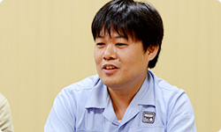 ※13 ペアレンタルコントロール＝未成年の方が使用される場合、その保護者が、対象となるコンテンツ（ゲームや一部のチャンネル）の使用や購入を制限させるための機能。 ※14 シームレス＝複数のサービスの間にある機能が区切られることなく、一貫して操作できる状態のこと。 加藤 また、一般的なＳＮＳ（※15）は、 ソーシャルネットワークにゲームがくっつくという イメージが多いと思うんですけど、 『Miiverse』の場合、 「ゲームに『Miiverse』がくっつく」 というイメージでつくられました。 そういった点がほかとは違う、と思います。 ※15 ＳＮＳ＝ソーシャル・ネットワーキング・サービス。インターネットを通じて、人と人とのつながりを促進、サポートする、コミュニティ型のウェブサイトサービスのこと。 岩田 いろいろなWii Uのゲームに、 『Miiverse』が寄り添うようにくっついていく、 というイメージですか？ 加藤 そうですね。 あと、「手書き投稿」については 途中から追加されたものなんです。 でも、手書きにはテキストにはない、 すごく楽しい雰囲気が出ています。 岩田 「手書き投稿」は どういうふうにはじまったんですか？ 加藤 水木さんからの鶴の一声で、 急に「“手書き”やります」って言われて、 みんな「えっ！」って・・・固まりました（笑）。 岩田 でも、手書きを入れようとすると、 いろんな問題がいっぱい出てきますよね。 栗栖 はい。正直「あー、きたかー・・・！」 とは思いましたけど（笑）。 ただ「うごメモはてな」を何年もやってきたので、 サーバーで手書き投稿をどのように扱うかは イメージできました。 岩田 でも、汗をかいていたことを まったく気づかせないほど、 なんの不思議もなく、すっと書けますよね。 湯澤 はい。「お客さんに喜んで使っていただくためには、 まずは自分たちが当然使ってみたいと思うものを つくらなければいけない」と思って、 まずはそこを意識してつくりました。 岩田 手書き以外に「この瞬間、変わった」 と思うようなことはありましたか？ 栗栖 「手ごたえを感じた」という意味では、 デバッグ作業でテストユーザーさんから投稿されたものを 実際、この目で見たときです。 いっしょに開発していたメンバーも、 様子を見てかなりテンションがあがっていました。 岩田 ああ、たしかにそのころ、水木さんが 「手ごたえが出てきて、みんな、元気になりました！」 って言ってました（笑）。 加藤 はい（笑）。 元気になるタイミングというのは 何回かありまして、まずはじめて 『Miiverse』が動作したときに元気が出て、 次は、自分のMiiをつけて 投稿できるようになったとき、 「おおおっ！」と元気になりました。 岩田 自分のMiiがつけられるようになると、 印象がガラッと変わるんですか？ 加藤 はい。Miiがたくさんいるだけで、 すごくにぎやかな感じがします。 栗栖 自分のMiiを使えるようになってから、 “自分が使うサービス”という 感覚に変わりましたね。 加藤 あと、ウェブとしては 当たり前なのかもしれないですが、 誰かが共感してくれたり、 返信してくれたときに、 通知を出す仕組みをはてなさんが つくってくれました。 「共感してくれてうれしい」っていうのと、 「完成に近づいてきてうれしい」っていうのを 同時に味わえて、「いいポイントができた」と思います。 岩田 はい、先ほども 水木さんがその話をしてくれました。 栗栖 そうなんですね。 通知の仕組みについては、 「これは絶対必要でしょう！」と言いながら、 勝手につくっていましたよね（笑）。 元山 ええ。投稿するだけじゃなく、 誰かからリアクションがあることが いちばんうれしいですから。 岩田 たしかに、自分が誰かに共感すること以上に、 誰かに自分が共感されたことは、 何倍もエネルギーをもらえる気がします。 人間という生き物の本能なんでしょうね。 栗栖 ええ。ほかのＳＮＳでも 人から何か反応があると、 「次も使おう」という モチベーションになりますから。 岩田 ちなみに『Miiverse』というサービスでは、 個々のアプリケーションに 『Miiverse』対応の機能を組み込むことで、 わざわざ画面を切り替えることなく 『Miiverse』への投稿ができるようにもなっています。 これも新しい試みなんですけど、 このサービスの仕組みはどうやって決めたんですか？ 加藤 手探りではありましたけど、 最終的にはゲーム開発者に考えてもらいたいので、 こちらの提供する機能は 基本的には「シンプルにしよう」と考えました。 あと、Wii Uの本体メニューにも 『Miiverse』が組み込まれるので、 ゲーム開発者の声だけでなく、 本体メニュー開発者の声も 『Miiverse』チームにフィードバックしたり、 逆に『Miiverse』チームの声を 開発者にフィードバックしたりして、 調整しながらつくっていきました。 岩田 加藤さんは、いままでの入社以来でいちばん、 同時にたくさんのチームとやりとりをしていますよね。 仕事量が５０倍くらいに増えた感じがしませんでしたか？ 加藤 はい、そうですね（笑）。 いままでずっとゲームの開発をしていたので、 ディレクターひとりとしか話さないで１日がおわる、 なんてことがしょっちゅうだったんです。 今回、爆発的に人とのかかわりが増えて 頭の切り替えが・・・。 次々に人がやってきて、用件を話していくので、 『鬼トレ』（※16）の「鬼計算」（※17）を リアルに体験しています。 一同 （笑） ※16 『鬼トレ』＝『東北大学加齢医学研究所 川島隆太教授監修 ものすごく脳を鍛える５分間の鬼トレーニング』。２０１２年７月２８日に、ニンテンドー3DS用ソフトとして発売された脳活性化ソフト。 ※17 「鬼計算」＝『鬼トレ』内の代表的なトレーニング。出題される計算問題の答えを憶えながら、前の問題の答えを連続して書いていく。「１バック」なら１問前、「２バック」なら２問前の答えを書く。 加藤 次の方がくるときに、 一時的に前の方との会話を 覚えておいて、話をするんです。 だからワーキングメモリー（※18）って 「すごく大事だなぁ」と、 日々実感しています（笑）。 ※18 ワーキングメモリー＝作動記憶。情報を一時的に保ちながら操作・利用する記憶の過程をいう。ある目的を持って記憶した状況を、自分の中の複数の情報と照らし合わせて適切な対応をする脳の働き。 岩田 はい、『鬼トレ』で鍛えてくださいね（笑）。 加藤 わかりました（笑）。 岩田 そのやりとりのなかで、 とくに印象深かったことは何ですか？ 加藤 ゲームから『Miiverse』に投稿するまでの時間ですね。 じつはゲームから『Miiverse』に投稿するには、 専用アプリを起動させて投稿する、 という仕組みになっています。 最初の試作品ができあがったとき、 「すごいものができた！」という気持ちで アプリ開発者のところに持っていったら、 「起動が遅すぎるよ」と言われて・・・（笑）。 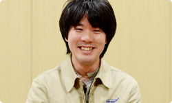 岩田 「褒めてもらおう！」と思って持っていったら、 「遅いよ」と言われたんですね。 加藤 はい。けちょんけちょんに言われました（笑）。 すごく凹んで帰ってきて、 「遅いのを何とかしたい・・・」って思う気持ちで。 その後、関係者みんなで速くする工夫を考えた結果、 いまはずいぶんスムーズに ゲームから投稿できるようになったと思います。 岩田 そこがいちばん大きな「ちゃぶ台返し」でしたか？ 加藤 納期が短くて、人数的にも厳しかったので、 「これは無謀かも・・・」と思っていたんですが、 外池（弘生）さん（※19）と 電遊社さんが頑張って何とかしてくれました。 ※19 外池弘生＝ネットワーク事業部所属。過去、 社長が訊く～任天堂で働くということ～ ネットワーク開発編に登場。
Nintendo×JOYSOUND Wii カラオケ U 篇 Nintendo Land 篇 Nintendo TVii 篇 Wii Street U powered by Google 篇 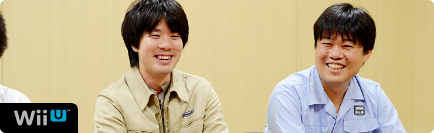 1. “ゲーム機ならではのブラウザー” 2. 「Miiがいるだけで」 3. “共感” 4. “クラウド型ゲーム日記” 岩田 『Miiverse』ならではの要素として、 どんな要素が付け加えられたんですか？ 湯澤 今回、『Miiverse』は 「独立したネットワークサービスではない」 という部分をかなり意識しました。 たとえば「お子さんをはじめとする 幅広い層のお客さんにご利用いただくことを 前提にしている」という点で、 Wii U上のペアレンタルコントロール（※13）を 『Miiverse』でも同じようにシームレス（※14）に 使えるかどうかも大事なんです。 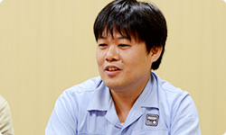 ※13 ペアレンタルコントロール＝未成年の方が使用される場合、その保護者が、対象となるコンテンツ（ゲームや一部のチャンネル）の使用や購入を制限させるための機能。 ※14 シームレス＝複数のサービスの間にある機能が区切られることなく、一貫して操作できる状態のこと。 加藤 また、一般的なＳＮＳ（※15）は、 ソーシャルネットワークにゲームがくっつくという イメージが多いと思うんですけど、 『Miiverse』の場合、 「ゲームに『Miiverse』がくっつく」 というイメージでつくられました。 そういった点がほかとは違う、と思います。 ※15 ＳＮＳ＝ソーシャル・ネットワーキング・サービス。インターネットを通じて、人と人とのつながりを促進、サポートする、コミュニティ型のウェブサイトサービスのこと。 岩田 いろいろなWii Uのゲームに、 『Miiverse』が寄り添うようにくっついていく、 というイメージですか？ 加藤 そうですね。 あと、「手書き投稿」については 途中から追加されたものなんです。 でも、手書きにはテキストにはない、 すごく楽しい雰囲気が出ています。 岩田 「手書き投稿」は どういうふうにはじまったんですか？ 加藤 水木さんからの鶴の一声で、 急に「“手書き”やります」って言われて、 みんな「えっ！」って・・・固まりました（笑）。 岩田 でも、手書きを入れようとすると、 いろんな問題がいっぱい出てきますよね。 栗栖 はい。正直「あー、きたかー・・・！」 とは思いましたけど（笑）。 ただ「うごメモはてな」を何年もやってきたので、 サーバーで手書き投稿をどのように扱うかは イメージできました。 岩田 でも、汗をかいていたことを まったく気づかせないほど、 なんの不思議もなく、すっと書けますよね。 湯澤 はい。「お客さんに喜んで使っていただくためには、 まずは自分たちが当然使ってみたいと思うものを つくらなければいけない」と思って、 まずはそこを意識してつくりました。 岩田 手書き以外に「この瞬間、変わった」 と思うようなことはありましたか？ 栗栖 「手ごたえを感じた」という意味では、 デバッグ作業でテストユーザーさんから投稿されたものを 実際、この目で見たときです。 いっしょに開発していたメンバーも、 様子を見てかなりテンションがあがっていました。 岩田 ああ、たしかにそのころ、水木さんが 「手ごたえが出てきて、みんな、元気になりました！」 って言ってました（笑）。 加藤 はい（笑）。 元気になるタイミングというのは 何回かありまして、まずはじめて 『Miiverse』が動作したときに元気が出て、 次は、自分のMiiをつけて 投稿できるようになったとき、 「おおおっ！」と元気になりました。 岩田 自分のMiiがつけられるようになると、 印象がガラッと変わるんですか？ 加藤 はい。Miiがたくさんいるだけで、 すごくにぎやかな感じがします。 栗栖 自分のMiiを使えるようになってから、 “自分が使うサービス”という 感覚に変わりましたね。 加藤 あと、ウェブとしては 当たり前なのかもしれないですが、 誰かが共感してくれたり、 返信してくれたときに、 通知を出す仕組みをはてなさんが つくってくれました。 「共感してくれてうれしい」っていうのと、 「完成に近づいてきてうれしい」っていうのを 同時に味わえて、「いいポイントができた」と思います。 岩田 はい、先ほども 水木さんがその話をしてくれました。 栗栖 そうなんですね。 通知の仕組みについては、 「これは絶対必要でしょう！」と言いながら、 勝手につくっていましたよね（笑）。 元山 ええ。投稿するだけじゃなく、 誰かからリアクションがあることが いちばんうれしいですから。 岩田 たしかに、自分が誰かに共感すること以上に、 誰かに自分が共感されたことは、 何倍もエネルギーをもらえる気がします。 人間という生き物の本能なんでしょうね。 栗栖 ええ。ほかのＳＮＳでも 人から何か反応があると、 「次も使おう」という モチベーションになりますから。 岩田 ちなみに『Miiverse』というサービスでは、 個々のアプリケーションに 『Miiverse』対応の機能を組み込むことで、 わざわざ画面を切り替えることなく 『Miiverse』への投稿ができるようにもなっています。 これも新しい試みなんですけど、 このサービスの仕組みはどうやって決めたんですか？ 加藤 手探りではありましたけど、 最終的にはゲーム開発者に考えてもらいたいので、 こちらの提供する機能は 基本的には「シンプルにしよう」と考えました。 あと、Wii Uの本体メニューにも 『Miiverse』が組み込まれるので、 ゲーム開発者の声だけでなく、 本体メニュー開発者の声も 『Miiverse』チームにフィードバックしたり、 逆に『Miiverse』チームの声を 開発者にフィードバックしたりして、 調整しながらつくっていきました。 岩田 加藤さんは、いままでの入社以来でいちばん、 同時にたくさんのチームとやりとりをしていますよね。 仕事量が５０倍くらいに増えた感じがしませんでしたか？ 加藤 はい、そうですね（笑）。 いままでずっとゲームの開発をしていたので、 ディレクターひとりとしか話さないで１日がおわる、 なんてことがしょっちゅうだったんです。 今回、爆発的に人とのかかわりが増えて 頭の切り替えが・・・。 次々に人がやってきて、用件を話していくので、 『鬼トレ』（※16）の「鬼計算」（※17）を リアルに体験しています。 一同 （笑） ※16 『鬼トレ』＝『東北大学加齢医学研究所 川島隆太教授監修 ものすごく脳を鍛える５分間の鬼トレーニング』。２０１２年７月２８日に、ニンテンドー3DS用ソフトとして発売された脳活性化ソフト。 ※17 「鬼計算」＝『鬼トレ』内の代表的なトレーニング。出題される計算問題の答えを憶えながら、前の問題の答えを連続して書いていく。「１バック」なら１問前、「２バック」なら２問前の答えを書く。 加藤 次の方がくるときに、 一時的に前の方との会話を 覚えておいて、話をするんです。 だからワーキングメモリー（※18）って 「すごく大事だなぁ」と、 日々実感しています（笑）。 ※18 ワーキングメモリー＝作動記憶。情報を一時的に保ちながら操作・利用する記憶の過程をいう。ある目的を持って記憶した状況を、自分の中の複数の情報と照らし合わせて適切な対応をする脳の働き。 岩田 はい、『鬼トレ』で鍛えてくださいね（笑）。 加藤 わかりました（笑）。 岩田 そのやりとりのなかで、 とくに印象深かったことは何ですか？ 加藤 ゲームから『Miiverse』に投稿するまでの時間ですね。 じつはゲームから『Miiverse』に投稿するには、 専用アプリを起動させて投稿する、 という仕組みになっています。 最初の試作品ができあがったとき、 「すごいものができた！」という気持ちで アプリ開発者のところに持っていったら、 「起動が遅すぎるよ」と言われて・・・（笑）。 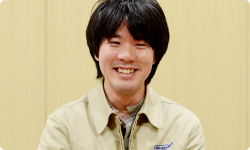 岩田 「褒めてもらおう！」と思って持っていったら、 「遅いよ」と言われたんですね。 加藤 はい。けちょんけちょんに言われました（笑）。 すごく凹んで帰ってきて、 「遅いのを何とかしたい・・・」って思う気持ちで。 その後、関係者みんなで速くする工夫を考えた結果、 いまはずいぶんスムーズに ゲームから投稿できるようになったと思います。 岩田 そこがいちばん大きな「ちゃぶ台返し」でしたか？ 加藤 納期が短くて、人数的にも厳しかったので、 「これは無謀かも・・・」と思っていたんですが、 外池（弘生）さん（※19）と 電遊社さんが頑張って何とかしてくれました。 ※19 外池弘生＝ネットワーク事業部所属。過去、 社長が訊く～任天堂で働くということ～ ネットワーク開発編に登場。
Nintendo Land 篇 Nintendo TVii 篇 Wii Street U powered by Google 篇 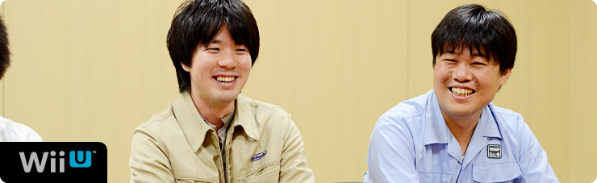 1. “ゲーム機ならではのブラウザー” 2. 「Miiがいるだけで」 3. “共感” 4. “クラウド型ゲーム日記” 岩田 『Miiverse』ならではの要素として、 どんな要素が付け加えられたんですか？ 湯澤 今回、『Miiverse』は 「独立したネットワークサービスではない」 という部分をかなり意識しました。 たとえば「お子さんをはじめとする 幅広い層のお客さんにご利用いただくことを 前提にしている」という点で、 Wii U上のペアレンタルコントロール（※13）を 『Miiverse』でも同じようにシームレス（※14）に 使えるかどうかも大事なんです。 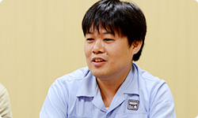 ※13 ペアレンタルコントロール＝未成年の方が使用される場合、その保護者が、対象となるコンテンツ（ゲームや一部のチャンネル）の使用や購入を制限させるための機能。 ※14 シームレス＝複数のサービスの間にある機能が区切られることなく、一貫して操作できる状態のこと。 加藤 また、一般的なＳＮＳ（※15）は、 ソーシャルネットワークにゲームがくっつくという イメージが多いと思うんですけど、 『Miiverse』の場合、 「ゲームに『Miiverse』がくっつく」 というイメージでつくられました。 そういった点がほかとは違う、と思います。 ※15 ＳＮＳ＝ソーシャル・ネットワーキング・サービス。インターネットを通じて、人と人とのつながりを促進、サポートする、コミュニティ型のウェブサイトサービスのこと。 岩田 いろいろなWii Uのゲームに、 『Miiverse』が寄り添うようにくっついていく、 というイメージですか？ 加藤 そうですね。 あと、「手書き投稿」については 途中から追加されたものなんです。 でも、手書きにはテキストにはない、 すごく楽しい雰囲気が出ています。 岩田 「手書き投稿」は どういうふうにはじまったんですか？ 加藤 水木さんからの鶴の一声で、 急に「“手書き”やります」って言われて、 みんな「えっ！」って・・・固まりました（笑）。 岩田 でも、手書きを入れようとすると、 いろんな問題がいっぱい出てきますよね。 栗栖 はい。正直「あー、きたかー・・・！」 とは思いましたけど（笑）。 ただ「うごメモはてな」を何年もやってきたので、 サーバーで手書き投稿をどのように扱うかは イメージできました。 岩田 でも、汗をかいていたことを まったく気づかせないほど、 なんの不思議もなく、すっと書けますよね。 湯澤 はい。「お客さんに喜んで使っていただくためには、 まずは自分たちが当然使ってみたいと思うものを つくらなければいけない」と思って、 まずはそこを意識してつくりました。 岩田 手書き以外に「この瞬間、変わった」 と思うようなことはありましたか？ 栗栖 「手ごたえを感じた」という意味では、 デバッグ作業でテストユーザーさんから投稿されたものを 実際、この目で見たときです。 いっしょに開発していたメンバーも、 様子を見てかなりテンションがあがっていました。 岩田 ああ、たしかにそのころ、水木さんが 「手ごたえが出てきて、みんな、元気になりました！」 って言ってました（笑）。 加藤 はい（笑）。 元気になるタイミングというのは 何回かありまして、まずはじめて 『Miiverse』が動作したときに元気が出て、 次は、自分のMiiをつけて 投稿できるようになったとき、 「おおおっ！」と元気になりました。 岩田 自分のMiiがつけられるようになると、 印象がガラッと変わるんですか？ 加藤 はい。Miiがたくさんいるだけで、 すごくにぎやかな感じがします。 栗栖 自分のMiiを使えるようになってから、 “自分が使うサービス”という 感覚に変わりましたね。 加藤 あと、ウェブとしては 当たり前なのかもしれないですが、 誰かが共感してくれたり、 返信してくれたときに、 通知を出す仕組みをはてなさんが つくってくれました。 「共感してくれてうれしい」っていうのと、 「完成に近づいてきてうれしい」っていうのを 同時に味わえて、「いいポイントができた」と思います。 岩田 はい、先ほども 水木さんがその話をしてくれました。 栗栖 そうなんですね。 通知の仕組みについては、 「これは絶対必要でしょう！」と言いながら、 勝手につくっていましたよね（笑）。 元山 ええ。投稿するだけじゃなく、 誰かからリアクションがあることが いちばんうれしいですから。 岩田 たしかに、自分が誰かに共感すること以上に、 誰かに自分が共感されたことは、 何倍もエネルギーをもらえる気がします。 人間という生き物の本能なんでしょうね。 栗栖 ええ。ほかのＳＮＳでも 人から何か反応があると、 「次も使おう」という モチベーションになりますから。 岩田 ちなみに『Miiverse』というサービスでは、 個々のアプリケーションに 『Miiverse』対応の機能を組み込むことで、 わざわざ画面を切り替えることなく 『Miiverse』への投稿ができるようにもなっています。 これも新しい試みなんですけど、 このサービスの仕組みはどうやって決めたんですか？ 加藤 手探りではありましたけど、 最終的にはゲーム開発者に考えてもらいたいので、 こちらの提供する機能は 基本的には「シンプルにしよう」と考えました。 あと、Wii Uの本体メニューにも 『Miiverse』が組み込まれるので、 ゲーム開発者の声だけでなく、 本体メニュー開発者の声も 『Miiverse』チームにフィードバックしたり、 逆に『Miiverse』チームの声を 開発者にフィードバックしたりして、 調整しながらつくっていきました。 岩田 加藤さんは、いままでの入社以来でいちばん、 同時にたくさんのチームとやりとりをしていますよね。 仕事量が５０倍くらいに増えた感じがしませんでしたか？ 加藤 はい、そうですね（笑）。 いままでずっとゲームの開発をしていたので、 ディレクターひとりとしか話さないで１日がおわる、 なんてことがしょっちゅうだったんです。 今回、爆発的に人とのかかわりが増えて 頭の切り替えが・・・。 次々に人がやってきて、用件を話していくので、 『鬼トレ』（※16）の「鬼計算」（※17）を リアルに体験しています。 一同 （笑） ※16 『鬼トレ』＝『東北大学加齢医学研究所 川島隆太教授監修 ものすごく脳を鍛える５分間の鬼トレーニング』。２０１２年７月２８日に、ニンテンドー3DS用ソフトとして発売された脳活性化ソフト。 ※17 「鬼計算」＝『鬼トレ』内の代表的なトレーニング。出題される計算問題の答えを憶えながら、前の問題の答えを連続して書いていく。「１バック」なら１問前、「２バック」なら２問前の答えを書く。 加藤 次の方がくるときに、 一時的に前の方との会話を 覚えておいて、話をするんです。 だからワーキングメモリー（※18）って 「すごく大事だなぁ」と、 日々実感しています（笑）。 ※18 ワーキングメモリー＝作動記憶。情報を一時的に保ちながら操作・利用する記憶の過程をいう。ある目的を持って記憶した状況を、自分の中の複数の情報と照らし合わせて適切な対応をする脳の働き。 岩田 はい、『鬼トレ』で鍛えてくださいね（笑）。 加藤 わかりました（笑）。 岩田 そのやりとりのなかで、 とくに印象深かったことは何ですか？ 加藤 ゲームから『Miiverse』に投稿するまでの時間ですね。 じつはゲームから『Miiverse』に投稿するには、 専用アプリを起動させて投稿する、 という仕組みになっています。 最初の試作品ができあがったとき、 「すごいものができた！」という気持ちで アプリ開発者のところに持っていったら、 「起動が遅すぎるよ」と言われて・・・（笑）。 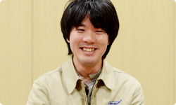 岩田 「褒めてもらおう！」と思って持っていったら、 「遅いよ」と言われたんですね。 加藤 はい。けちょんけちょんに言われました（笑）。 すごく凹んで帰ってきて、 「遅いのを何とかしたい・・・」って思う気持ちで。 その後、関係者みんなで速くする工夫を考えた結果、 いまはずいぶんスムーズに ゲームから投稿できるようになったと思います。 岩田 そこがいちばん大きな「ちゃぶ台返し」でしたか？ 加藤 納期が短くて、人数的にも厳しかったので、 「これは無謀かも・・・」と思っていたんですが、 外池（弘生）さん（※19）と 電遊社さんが頑張って何とかしてくれました。 ※19 外池弘生＝ネットワーク事業部所属。過去、 社長が訊く～任天堂で働くということ～ ネットワーク開発編に登場。
Nintendo TVii 篇 Wii Street U powered by Google 篇 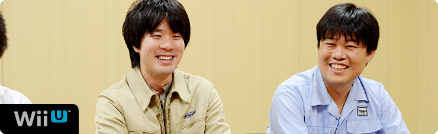 1. “ゲーム機ならではのブラウザー” 2. 「Miiがいるだけで」 3. “共感” 4. “クラウド型ゲーム日記” 岩田 『Miiverse』ならではの要素として、 どんな要素が付け加えられたんですか？ 湯澤 今回、『Miiverse』は 「独立したネットワークサービスではない」 という部分をかなり意識しました。 たとえば「お子さんをはじめとする 幅広い層のお客さんにご利用いただくことを 前提にしている」という点で、 Wii U上のペアレンタルコントロール（※13）を 『Miiverse』でも同じようにシームレス（※14）に 使えるかどうかも大事なんです。 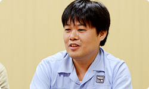 ※13 ペアレンタルコントロール＝未成年の方が使用される場合、その保護者が、対象となるコンテンツ（ゲームや一部のチャンネル）の使用や購入を制限させるための機能。 ※14 シームレス＝複数のサービスの間にある機能が区切られることなく、一貫して操作できる状態のこと。 加藤 また、一般的なＳＮＳ（※15）は、 ソーシャルネットワークにゲームがくっつくという イメージが多いと思うんですけど、 『Miiverse』の場合、 「ゲームに『Miiverse』がくっつく」 というイメージでつくられました。 そういった点がほかとは違う、と思います。 ※15 ＳＮＳ＝ソーシャル・ネットワーキング・サービス。インターネットを通じて、人と人とのつながりを促進、サポートする、コミュニティ型のウェブサイトサービスのこと。 岩田 いろいろなWii Uのゲームに、 『Miiverse』が寄り添うようにくっついていく、 というイメージですか？ 加藤 そうですね。 あと、「手書き投稿」については 途中から追加されたものなんです。 でも、手書きにはテキストにはない、 すごく楽しい雰囲気が出ています。 岩田 「手書き投稿」は どういうふうにはじまったんですか？ 加藤 水木さんからの鶴の一声で、 急に「“手書き”やります」って言われて、 みんな「えっ！」って・・・固まりました（笑）。 岩田 でも、手書きを入れようとすると、 いろんな問題がいっぱい出てきますよね。 栗栖 はい。正直「あー、きたかー・・・！」 とは思いましたけど（笑）。 ただ「うごメモはてな」を何年もやってきたので、 サーバーで手書き投稿をどのように扱うかは イメージできました。 岩田 でも、汗をかいていたことを まったく気づかせないほど、 なんの不思議もなく、すっと書けますよね。 湯澤 はい。「お客さんに喜んで使っていただくためには、 まずは自分たちが当然使ってみたいと思うものを つくらなければいけない」と思って、 まずはそこを意識してつくりました。 岩田 手書き以外に「この瞬間、変わった」 と思うようなことはありましたか？ 栗栖 「手ごたえを感じた」という意味では、 デバッグ作業でテストユーザーさんから投稿されたものを 実際、この目で見たときです。 いっしょに開発していたメンバーも、 様子を見てかなりテンションがあがっていました。 岩田 ああ、たしかにそのころ、水木さんが 「手ごたえが出てきて、みんな、元気になりました！」 って言ってました（笑）。 加藤 はい（笑）。 元気になるタイミングというのは 何回かありまして、まずはじめて 『Miiverse』が動作したときに元気が出て、 次は、自分のMiiをつけて 投稿できるようになったとき、 「おおおっ！」と元気になりました。 岩田 自分のMiiがつけられるようになると、 印象がガラッと変わるんですか？ 加藤 はい。Miiがたくさんいるだけで、 すごくにぎやかな感じがします。 栗栖 自分のMiiを使えるようになってから、 “自分が使うサービス”という 感覚に変わりましたね。 加藤 あと、ウェブとしては 当たり前なのかもしれないですが、 誰かが共感してくれたり、 返信してくれたときに、 通知を出す仕組みをはてなさんが つくってくれました。 「共感してくれてうれしい」っていうのと、 「完成に近づいてきてうれしい」っていうのを 同時に味わえて、「いいポイントができた」と思います。 岩田 はい、先ほども 水木さんがその話をしてくれました。 栗栖 そうなんですね。 通知の仕組みについては、 「これは絶対必要でしょう！」と言いながら、 勝手につくっていましたよね（笑）。 元山 ええ。投稿するだけじゃなく、 誰かからリアクションがあることが いちばんうれしいですから。 岩田 たしかに、自分が誰かに共感すること以上に、 誰かに自分が共感されたことは、 何倍もエネルギーをもらえる気がします。 人間という生き物の本能なんでしょうね。 栗栖 ええ。ほかのＳＮＳでも 人から何か反応があると、 「次も使おう」という モチベーションになりますから。 岩田 ちなみに『Miiverse』というサービスでは、 個々のアプリケーションに 『Miiverse』対応の機能を組み込むことで、 わざわざ画面を切り替えることなく 『Miiverse』への投稿ができるようにもなっています。 これも新しい試みなんですけど、 このサービスの仕組みはどうやって決めたんですか？ 加藤 手探りではありましたけど、 最終的にはゲーム開発者に考えてもらいたいので、 こちらの提供する機能は 基本的には「シンプルにしよう」と考えました。 あと、Wii Uの本体メニューにも 『Miiverse』が組み込まれるので、 ゲーム開発者の声だけでなく、 本体メニュー開発者の声も 『Miiverse』チームにフィードバックしたり、 逆に『Miiverse』チームの声を 開発者にフィードバックしたりして、 調整しながらつくっていきました。 岩田 加藤さんは、いままでの入社以来でいちばん、 同時にたくさんのチームとやりとりをしていますよね。 仕事量が５０倍くらいに増えた感じがしませんでしたか？ 加藤 はい、そうですね（笑）。 いままでずっとゲームの開発をしていたので、 ディレクターひとりとしか話さないで１日がおわる、 なんてことがしょっちゅうだったんです。 今回、爆発的に人とのかかわりが増えて 頭の切り替えが・・・。 次々に人がやってきて、用件を話していくので、 『鬼トレ』（※16）の「鬼計算」（※17）を リアルに体験しています。 一同 （笑） ※16 『鬼トレ』＝『東北大学加齢医学研究所 川島隆太教授監修 ものすごく脳を鍛える５分間の鬼トレーニング』。２０１２年７月２８日に、ニンテンドー3DS用ソフトとして発売された脳活性化ソフト。 ※17 「鬼計算」＝『鬼トレ』内の代表的なトレーニング。出題される計算問題の答えを憶えながら、前の問題の答えを連続して書いていく。「１バック」なら１問前、「２バック」なら２問前の答えを書く。 加藤 次の方がくるときに、 一時的に前の方との会話を 覚えておいて、話をするんです。 だからワーキングメモリー（※18）って 「すごく大事だなぁ」と、 日々実感しています（笑）。 ※18 ワーキングメモリー＝作動記憶。情報を一時的に保ちながら操作・利用する記憶の過程をいう。ある目的を持って記憶した状況を、自分の中の複数の情報と照らし合わせて適切な対応をする脳の働き。 岩田 はい、『鬼トレ』で鍛えてくださいね（笑）。 加藤 わかりました（笑）。 岩田 そのやりとりのなかで、 とくに印象深かったことは何ですか？ 加藤 ゲームから『Miiverse』に投稿するまでの時間ですね。 じつはゲームから『Miiverse』に投稿するには、 専用アプリを起動させて投稿する、 という仕組みになっています。 最初の試作品ができあがったとき、 「すごいものができた！」という気持ちで アプリ開発者のところに持っていったら、 「起動が遅すぎるよ」と言われて・・・（笑）。 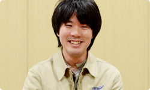 岩田 「褒めてもらおう！」と思って持っていったら、 「遅いよ」と言われたんですね。 加藤 はい。けちょんけちょんに言われました（笑）。 すごく凹んで帰ってきて、 「遅いのを何とかしたい・・・」って思う気持ちで。 その後、関係者みんなで速くする工夫を考えた結果、 いまはずいぶんスムーズに ゲームから投稿できるようになったと思います。 岩田 そこがいちばん大きな「ちゃぶ台返し」でしたか？ 加藤 納期が短くて、人数的にも厳しかったので、 「これは無謀かも・・・」と思っていたんですが、 外池（弘生）さん（※19）と 電遊社さんが頑張って何とかしてくれました。 ※19 外池弘生＝ネットワーク事業部所属。過去、 社長が訊く～任天堂で働くということ～ ネットワーク開発編に登場。
Wii Street U powered by Google 篇 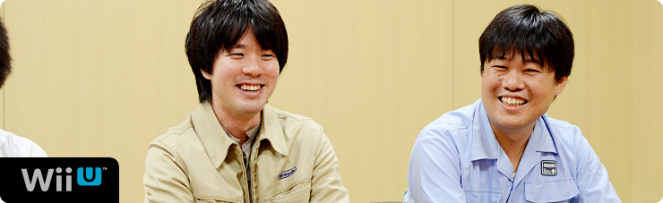 1. “ゲーム機ならではのブラウザー” 2. 「Miiがいるだけで」 3. “共感” 4. “クラウド型ゲーム日記” 岩田 『Miiverse』ならではの要素として、 どんな要素が付け加えられたんですか？ 湯澤 今回、『Miiverse』は 「独立したネットワークサービスではない」 という部分をかなり意識しました。 たとえば「お子さんをはじめとする 幅広い層のお客さんにご利用いただくことを 前提にしている」という点で、 Wii U上のペアレンタルコントロール（※13）を 『Miiverse』でも同じようにシームレス（※14）に 使えるかどうかも大事なんです。 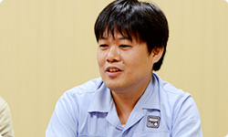 ※13 ペアレンタルコントロール＝未成年の方が使用される場合、その保護者が、対象となるコンテンツ（ゲームや一部のチャンネル）の使用や購入を制限させるための機能。 ※14 シームレス＝複数のサービスの間にある機能が区切られることなく、一貫して操作できる状態のこと。 加藤 また、一般的なＳＮＳ（※15）は、 ソーシャルネットワークにゲームがくっつくという イメージが多いと思うんですけど、 『Miiverse』の場合、 「ゲームに『Miiverse』がくっつく」 というイメージでつくられました。 そういった点がほかとは違う、と思います。 ※15 ＳＮＳ＝ソーシャル・ネットワーキング・サービス。インターネットを通じて、人と人とのつながりを促進、サポートする、コミュニティ型のウェブサイトサービスのこと。 岩田 いろいろなWii Uのゲームに、 『Miiverse』が寄り添うようにくっついていく、 というイメージですか？ 加藤 そうですね。 あと、「手書き投稿」については 途中から追加されたものなんです。 でも、手書きにはテキストにはない、 すごく楽しい雰囲気が出ています。 岩田 「手書き投稿」は どういうふうにはじまったんですか？ 加藤 水木さんからの鶴の一声で、 急に「“手書き”やります」って言われて、 みんな「えっ！」って・・・固まりました（笑）。 岩田 でも、手書きを入れようとすると、 いろんな問題がいっぱい出てきますよね。 栗栖 はい。正直「あー、きたかー・・・！」 とは思いましたけど（笑）。 ただ「うごメモはてな」を何年もやってきたので、 サーバーで手書き投稿をどのように扱うかは イメージできました。 岩田 でも、汗をかいていたことを まったく気づかせないほど、 なんの不思議もなく、すっと書けますよね。 湯澤 はい。「お客さんに喜んで使っていただくためには、 まずは自分たちが当然使ってみたいと思うものを つくらなければいけない」と思って、 まずはそこを意識してつくりました。 岩田 手書き以外に「この瞬間、変わった」 と思うようなことはありましたか？ 栗栖 「手ごたえを感じた」という意味では、 デバッグ作業でテストユーザーさんから投稿されたものを 実際、この目で見たときです。 いっしょに開発していたメンバーも、 様子を見てかなりテンションがあがっていました。 岩田 ああ、たしかにそのころ、水木さんが 「手ごたえが出てきて、みんな、元気になりました！」 って言ってました（笑）。 加藤 はい（笑）。 元気になるタイミングというのは 何回かありまして、まずはじめて 『Miiverse』が動作したときに元気が出て、 次は、自分のMiiをつけて 投稿できるようになったとき、 「おおおっ！」と元気になりました。 岩田 自分のMiiがつけられるようになると、 印象がガラッと変わるんですか？ 加藤 はい。Miiがたくさんいるだけで、 すごくにぎやかな感じがします。 栗栖 自分のMiiを使えるようになってから、 “自分が使うサービス”という 感覚に変わりましたね。 加藤 あと、ウェブとしては 当たり前なのかもしれないですが、 誰かが共感してくれたり、 返信してくれたときに、 通知を出す仕組みをはてなさんが つくってくれました。 「共感してくれてうれしい」っていうのと、 「完成に近づいてきてうれしい」っていうのを 同時に味わえて、「いいポイントができた」と思います。 岩田 はい、先ほども 水木さんがその話をしてくれました。 栗栖 そうなんですね。 通知の仕組みについては、 「これは絶対必要でしょう！」と言いながら、 勝手につくっていましたよね（笑）。 元山 ええ。投稿するだけじゃなく、 誰かからリアクションがあることが いちばんうれしいですから。 岩田 たしかに、自分が誰かに共感すること以上に、 誰かに自分が共感されたことは、 何倍もエネルギーをもらえる気がします。 人間という生き物の本能なんでしょうね。 栗栖 ええ。ほかのＳＮＳでも 人から何か反応があると、 「次も使おう」という モチベーションになりますから。 岩田 ちなみに『Miiverse』というサービスでは、 個々のアプリケーションに 『Miiverse』対応の機能を組み込むことで、 わざわざ画面を切り替えることなく 『Miiverse』への投稿ができるようにもなっています。 これも新しい試みなんですけど、 このサービスの仕組みはどうやって決めたんですか？ 加藤 手探りではありましたけど、 最終的にはゲーム開発者に考えてもらいたいので、 こちらの提供する機能は 基本的には「シンプルにしよう」と考えました。 あと、Wii Uの本体メニューにも 『Miiverse』が組み込まれるので、 ゲーム開発者の声だけでなく、 本体メニュー開発者の声も 『Miiverse』チームにフィードバックしたり、 逆に『Miiverse』チームの声を 開発者にフィードバックしたりして、 調整しながらつくっていきました。 岩田 加藤さんは、いままでの入社以来でいちばん、 同時にたくさんのチームとやりとりをしていますよね。 仕事量が５０倍くらいに増えた感じがしませんでしたか？ 加藤 はい、そうですね（笑）。 いままでずっとゲームの開発をしていたので、 ディレクターひとりとしか話さないで１日がおわる、 なんてことがしょっちゅうだったんです。 今回、爆発的に人とのかかわりが増えて 頭の切り替えが・・・。 次々に人がやってきて、用件を話していくので、 『鬼トレ』（※16）の「鬼計算」（※17）を リアルに体験しています。 一同 （笑） ※16 『鬼トレ』＝『東北大学加齢医学研究所 川島隆太教授監修 ものすごく脳を鍛える５分間の鬼トレーニング』。２０１２年７月２８日に、ニンテンドー3DS用ソフトとして発売された脳活性化ソフト。 ※17 「鬼計算」＝『鬼トレ』内の代表的なトレーニング。出題される計算問題の答えを憶えながら、前の問題の答えを連続して書いていく。「１バック」なら１問前、「２バック」なら２問前の答えを書く。 加藤 次の方がくるときに、 一時的に前の方との会話を 覚えておいて、話をするんです。 だからワーキングメモリー（※18）って 「すごく大事だなぁ」と、 日々実感しています（笑）。 ※18 ワーキングメモリー＝作動記憶。情報を一時的に保ちながら操作・利用する記憶の過程をいう。ある目的を持って記憶した状況を、自分の中の複数の情報と照らし合わせて適切な対応をする脳の働き。 岩田 はい、『鬼トレ』で鍛えてくださいね（笑）。 加藤 わかりました（笑）。 岩田 そのやりとりのなかで、 とくに印象深かったことは何ですか？ 加藤 ゲームから『Miiverse』に投稿するまでの時間ですね。 じつはゲームから『Miiverse』に投稿するには、 専用アプリを起動させて投稿する、 という仕組みになっています。 最初の試作品ができあがったとき、 「すごいものができた！」という気持ちで アプリ開発者のところに持っていったら、 「起動が遅すぎるよ」と言われて・・・（笑）。 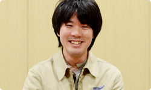 岩田 「褒めてもらおう！」と思って持っていったら、 「遅いよ」と言われたんですね。 加藤 はい。けちょんけちょんに言われました（笑）。 すごく凹んで帰ってきて、 「遅いのを何とかしたい・・・」って思う気持ちで。 その後、関係者みんなで速くする工夫を考えた結果、 いまはずいぶんスムーズに ゲームから投稿できるようになったと思います。 岩田 そこがいちばん大きな「ちゃぶ台返し」でしたか？ 加藤 納期が短くて、人数的にも厳しかったので、 「これは無謀かも・・・」と思っていたんですが、 外池（弘生）さん（※19）と 電遊社さんが頑張って何とかしてくれました。 ※19 外池弘生＝ネットワーク事業部所属。過去、 社長が訊く～任天堂で働くということ～ ネットワーク開発編に登場。
1. “ゲーム機ならではのブラウザー”
2. 「Miiがいるだけで」
3. “共感”
4. “クラウド型ゲーム日記”